<!doctype html>
<html lang="en">
<head>
  <meta charset="utf-8">
  <meta name="viewport" content="width=device-width, initial-scale=1">
  <title>arxiv digest — 2026-09-04</title>
  <style>
:root {
  --bg: #ffffff;
  --fg: #1f2328;
  --muted: #59636e;
  --border: #d0d7de;
  --card: #f6f8fa;
  --link: #0969da;
}
body {
  max-width: 980px;
  margin: 0 auto;
  padding: 2rem 1rem 5rem;
  font-family: -apple-system, BlinkMacSystemFont, "Segoe UI", Helvetica, Arial, sans-serif;
  line-height: 1.55;
  color: var(--fg);
  background: var(--bg);
}
a { color: var(--link); }
img { max-width: 100%; height: auto; }
pre, code { background: var(--card); border-radius: 6px; }
pre { padding: 1rem; overflow-x: auto; }
blockquote { border-left: 4px solid var(--border); padding-left: 1rem; color: var(--muted); }
details { margin: 0.6rem 0; }
summary { cursor: pointer; font-weight: 600; }
.paper-figures-scroll {
  display: flex;
  gap: 1rem;
  overflow-x: auto;
  overscroll-behavior-x: contain;
  padding: 0.75rem 0.25rem 1rem;
  margin: 1rem 0 1.25rem;
  border-top: 1px solid var(--border);
  border-bottom: 1px solid var(--border);
  scroll-snap-type: x proximity;
}
.paper-figure-card {
  flex: 0 0 min(260px, 72vw);
  scroll-snap-align: start;
  background: var(--card);
  border: 1px solid var(--border);
  border-radius: 12px;
  padding: 0.55rem;
}
.paper-figure-card img {
  display: block;
  width: 100%;
  max-height: 240px;
  object-fit: contain;
  background: white;
  border-radius: 8px;
}
.paper-figure-caption {
  display: block;
  margin-top: 0.5rem;
  color: var(--muted);
  font-size: 0.85rem;
}
.figure-strip-hint {
  color: var(--muted);
  font-size: 0.9rem;
  margin-bottom: -0.3rem;
}
</style>
  <!-- MathJax: renders $...$ inline math and $$...$$ display math, plus
       \(...\) and \[...\]. Loaded from the official CDN; works offline
       once cached. Configured to skip code/pre blocks so arxiv IDs that
       look like dollar amounts don't get mangled. -->
  <script>
    window.MathJax = {
      tex: {
        inlineMath: [['$', '$'], ['\\(', '\\)']],
        displayMath: [['$$', '$$'], ['\\[', '\\]']],
        processEscapes: true,
        processEnvironments: true
      },
      options: {
        skipHtmlTags: ['script', 'noscript', 'style', 'textarea', 'pre', 'code'],
        ignoreHtmlClass: 'tex2jax_ignore',
        processHtmlClass: 'tex2jax_process'
      }
    };
  </script>
  <script id="MathJax-script" async
    src="https://cdn.jsdelivr.net/npm/mathjax@3/es5/tex-chtml.js"></script>
</head>
<body>
<header style="background-color: #333; color: white; padding: 15px; margin-bottom: 20px;">
  <h1 style="margin: 0; font-size: 24px;">
    <a href="https://ochelpan.github.io/arXiv_clean/" style="color: white; text-decoration: none;">Main</a>
  </h1>
</header>

<h1>Daily arXiv Report</h1>

<hr>
<p>
<a href="index.html">← Index</a>
 · <a href="papers_02.html">Next →</a>
</p>
<hr>

<h2>Papers 1–20</h2>
<p><a id="paper-2609.02518"></a></p>
<h3 id="efficient-simulation-of-nonreciprocal-many-body-physics-via-quantum-feedback">⭐ <a href="http://arxiv.org/abs/2609.02518v1">Efficient Simulation of Nonreciprocal Many-body Physics via Quantum Feedback</a></h3>
<p><strong>Highlighted author(s):</strong> Aashish A. Clerk, Hannes Pichler<br>
<strong>Authors:</strong> Kseniia Vodenkova, Andrew Pocklington, Fan Yang, Andrew Lingenfelter, Aashish A. Clerk, Hannes Pichler<br>
<strong>Type:</strong> both · <strong>Category:</strong> other · <strong>PDF:</strong> <a href="https://arxiv.org/pdf/2609.02518v1">https://arxiv.org/pdf/2609.02518v1</a><br>
<strong>Analysis basis:</strong> full PDF text, analyzed in chunks
<strong>Topic relevance:</strong> 🔥 <code>quantum measurements</code> <strong>4/5</strong> · 🔥 <code>quantum optics experiment</code> <strong>4/5</strong> · <code>analog quantum simulation</code> <strong>3/5</strong> · <code>correlated / nonlocal dissipation</code> <strong>3/5</strong> · <code>driven-dissipative phase transition</code> <strong>3/5</strong> · <code>methods for driven-dissipative</code> <strong>3/5</strong> · <code>non-equilibrium universality</code> <strong>3/5</strong> · <code>Tavis-Cummings &amp; cavity-many-emitter</code> <strong>2/5</strong> · <code>Full counting statistics</code> <strong>1/5</strong> · <code>Keldysh / 2PI / non-Gaussian methods</code> <strong>1/5</strong></p>
<div class="figure-strip-hint">↔ Scroll figures horizontally</div>
<div class="paper-figures-scroll">
<figure class="paper-figure-card">
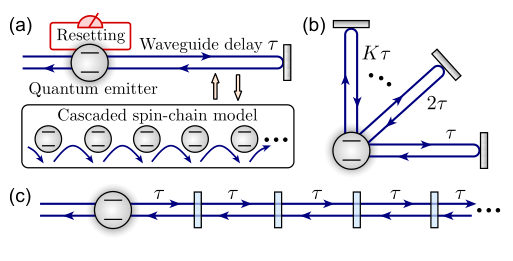
<figcaption class="paper-figure-caption"><b>Fig 1.</b> FIG. 1. Illustration of the scheme and its generalized ver- sions. (a) A single quantum emitter coupled to a 1D waveg- uide mode, subjected to coherent delayed feedback (blue lines) and incoherent measurement feedback (red lines). (b) A single quantum emitter coupled to multiple 1D waveguides, realizing up to K-local nonreciprocal couplings. (c) A single quantum emitter coupled to a 1D waveguide terminated by a Bragg mirror, mimicking a long-range interaction tail.</figcaption>
</figure>
<figure class="paper-figure-card">
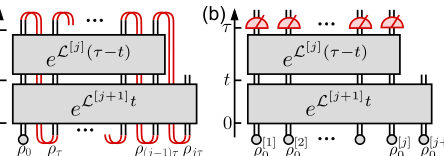
<figcaption class="paper-figure-caption"><b>Fig 2.</b> FIG. 2. Tensor network mapping the delayed feedback control to cascaded spin chains. (a) The full evolution corresponds to a shifted boundary condition in which the initial state of each cascaded lattice site at t = 0 is correlated with the final state at t = τ of the previous site (red tensor network connections). (b) Stroboscopic resetting can realize an arbitrary product initial many-body state.</figcaption>
</figure>
<figure class="paper-figure-card">
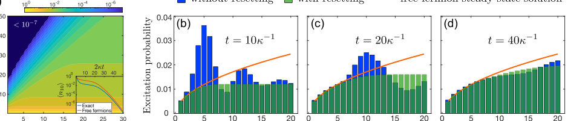
<figcaption class="paper-figure-caption"><b>Fig 3.</b> FIG. 3. Evolution of local observables of the cascaded spin chain. (a) Excitation probability dynamics for a chain with only loss, with each QE initialized in the excited state. The inset plot shows a comparison between the exact numerical calculation and free fermion approximation [40] for site j = 10. (b)-(d) Excitation probability of spin chain sites j under incoherent pumping at the indicated times t = τ for different delay times τ. The green and blue bars show results with and without resetting, respectively. The solid lines show the steady-state solutions under the free-fermion approximation. For all plots, the numerical simulation Trotter step is 2κdt = 0.001 and for (b)-(d) the...</figcaption>
</figure>
<figure class="paper-figure-card">
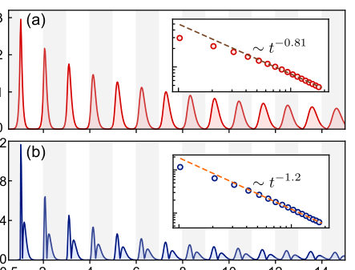
<figcaption class="paper-figure-caption"><b>Fig 4.</b> FIG. 4. Two-time correlation functions of the quantum emit- ter under the delayed feedback and a weak incoherent pump (without resetting). (a) Magnitude of atomic correlations Ga(τ +t, τ) = κ⟨σ+(τ +t)σ−(τ)⟩/Γ. (b) Magnitude of output field correlations Gout(τ + t, τ) = ⟨b† out(τ + t)bout(τ)⟩/Γ. The insets show the power-law fitting to peak values of the correla- tions. The parameters are the same as in Fig. 3(d). The shad- ing bars indicate lattice sites in the spin chain. E.g., for t/τ ∈ [4, 5] the many-body correlation is G6,2(t′, 0) = ⟨σ+ 6 (t′)σ− 2 (0)⟩ for t′ ∈[0, τ].</figcaption>
</figure>
<figure class="paper-figure-card">
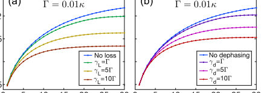
<figcaption class="paper-figure-caption"><b>Fig 5.</b> FIG. 5. Steady state properties of the 1D cascaded chain [Eq. (1)] with the effects of the excitation loss (a) or dephas- ing (b) with the incoherent pump strength Γ = 0.01κ. The simulation Trotter step is 2κdt = 0.001, and the delay time is τ = 50κ−1, which is sufficient to approximate steady state.</figcaption>
</figure>
</div>

<p><strong>Summary.</strong> The authors propose using a single quantum emitter coupled to a waveguide with coherent time-delayed feedback to simulate complex, nonreciprocal many-body spin models. This method effectively creates a scalable, cascaded spin chain whose dynamics can be read out by measuring the emitter and output field. The work successfully demonstrates access to exotic nonreciprocal phenomena, proving the concept's feasibility for experimental quantum simulation.</p>
<p><strong>Why it may be interesting.</strong> This work provides a concrete, experimentally realizable quantum optics platform (single emitter + waveguide) to study fundamental many-body physics concepts like nonreciprocity and topological effects (LSE) that are usually studied in solid-state or cold atom arrays.</p>
<details>
<summary>Detailed structure</summary>
<p><strong>Main problem.</strong> The paper addresses the challenge of efficiently simulating nonreciprocal many-body spin models, especially in regimes where excitations propagate unidirectionally.</p>
<p><strong>Main result.</strong> They demonstrate a scalable scheme using coherent time-delayed feedback on a single quantum emitter to realize and probe nonreciprocal physics, exhibiting features like the Liouvillian skin effect.</p>
<p><strong>Method.</strong> The simulation maps the physical system onto an effective cascaded spin chain, allowing access to steady-state and quench dynamics via measurement of the emitter and output field.</p>
<p><strong>Model / system.</strong> The platform is a single quantum emitter coupled to a 1D waveguide mode. Nonreciprocity is engineered using coherent time-delayed feedback ($   au$), creating an effective interaction where the emitter affects itself at later times.</p>
<p><strong>Key observables.</strong> Steady-state quantities, two-time correlation functions, local spin density profiles ($\langle \sigma^z_i 
angle_{ss}$), and output photon correlation functions.</p>
<p><strong>Important parameters / regimes.</strong> The delay time $    au$, the coupling strength $\kappa$, and the loss/dissipation rates ($\gamma_L, \eta$). The maximum simulable length is limited by the ratio $\kappa/\gamma_L$.</p>
<p><strong>Assumptions / limitations.</strong> The scheme assumes the feedback delay $  au$ is large enough for steady-state access, and the reset procedure must be much faster than the interaction time scale.</p>
<p><strong>Figures summary.</strong> Figures illustrate the physical setup (QE with feedback), the mapping to cascaded spin chains, and the evolution of local observables showing signatures of nonreciprocity like the LSE.</p>
<p><strong>Paper structure.</strong> The paper introduces the physical setup and the effective Hamiltonian, details the simulation methods for steady-state and quench dynamics, analyzes key nonreciprocal signatures (LSE, correlation decay), and concludes with experimental feasibility and limitations.</p>
</details>
<details>
<summary>Abstract</summary>
<p>We present a scheme to efficiently simulate nonreciprocal many-body spin models using a non-Markovian open system. Our scheme utilizes a single quantum emitter coupled to a waveguide mode that is fed back to the same emitter after a time delay. With this coherent delayed feedback, an effective nonreciprocal interaction can be engineered, wherein the emitter at earlier times affects itself at later times, creating a scalable spin chain. We show that all the steady-state quantities of such spin models can be accessed through measurement of the emitter and the output field. Furthermore, using classical feedback that resets the emitter, quench dynamics from arbitrary product states can be simulated. We demonstrate striking features of nonreciprocal models, such as the Liouvillian skin effect, anomalous relaxation dynamics, and quasi-long-range order of output photons. Finally, we show that the proposal is amenable to experimental realization and robust to imperfections. Our work establishes a feasible way to scale up a nonreciprocal many-body system, and provides a new route towards generation of exotic states of light.</p>
</details>
<p><sub><a href="#top">↑ back to top</a></sub></p>

<p><a id="paper-2609.02490"></a></p>
<h3 id="engineering-of-non-hermitian-trajectories-and-phase-structure-in-an-open-bose-hubbard-model-via-rate-operator-transformations"><a href="http://arxiv.org/abs/2609.02490v1">Engineering of Non-Hermitian Trajectories and Phase Structure in an Open Bose-Hubbard Model via Rate Operator Transformations</a></h3>
<p><strong>Authors:</strong> Jaakko Luomala, Kimmo Luoma, Iiro Vilja, Jyrki Piilo<br>
<strong>Type:</strong> theory · <strong>Category:</strong> other · <strong>PDF:</strong> <a href="https://arxiv.org/pdf/2609.02490v1">https://arxiv.org/pdf/2609.02490v1</a><br>
<strong>Analysis basis:</strong> full PDF text, analyzed in chunks
<strong>Topic relevance:</strong> 🔥 <code>driven-dissipative phase transition</code> <strong>4/5</strong> · 🔥 <code>methods for driven-dissipative</code> <strong>4/5</strong> · 🔥 <code>quantum measurements</code> <strong>4/5</strong> · <code>analog quantum simulation</code> <strong>3/5</strong> · <code>correlated / nonlocal dissipation</code> <strong>3/5</strong> · <code>non-equilibrium universality</code> <strong>3/5</strong> · <code>Keldysh / 2PI / non-Gaussian methods</code> <strong>1/5</strong></p>
<div class="figure-strip-hint">↔ Scroll figures horizontally</div>
<div class="paper-figures-scroll">
<figure class="paper-figure-card">
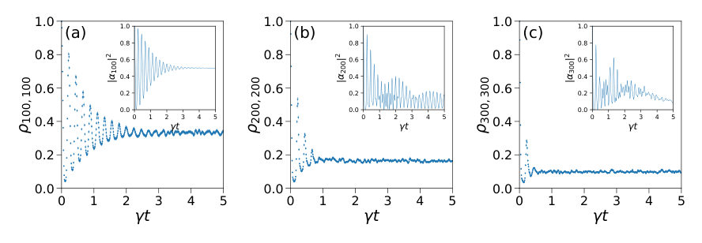
<figcaption class="paper-figure-caption"><b>Fig 1.</b> FIG. 1: Solutions to the non-local dephasing master equation (15) for populations ρN00,N00 solved using the rate-operator formalism with (a): N = 1, (b): N = 2 and (c): N = 3. Parameters are J/γ = 20, U/γ = 5. Insets have a corresponding deterministic evolutions controlled by effective Hamiltonian with rate operator transformations C = k n2, with k/γ values (a): 6.0, (b): 4.8 and (c): 4.0. The result was calculated using 1000 trajectories. The error bars represent the standard deviation of the populations divided by the square root of the number of trajectories.</figcaption>
</figure>
<figure class="paper-figure-card">
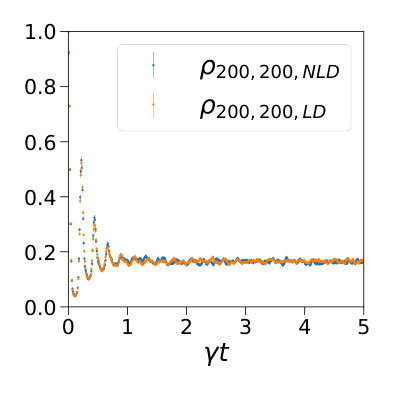
<figcaption class="paper-figure-caption"><b>Fig 2.</b> FIG. 2: Master equation solutions for population ρ200,200 solved using the rate-operator formalism for two different dephasing schemes for N = 2. Parameters are J/γ = 20, U/γ = 5. The result was calculated using 1000 trajectories. The error bars represent the standard deviation of the populations divided by the square root of the number of trajectories.</figcaption>
</figure>
<figure class="paper-figure-card">
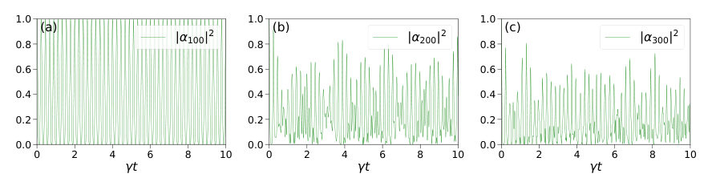
<figcaption class="paper-figure-caption"><b>Fig 3.</b> FIG. 3: Examples of unitary evolutions for the particle numbers N = 1, N = 2 and N = 3 with initial states |N, 0, 0⟩and parameters are J/γ = 20 and U/γ = 5. Fig. (a): Absolute square of the amplitude α100. Fig. (b): Absolute square of the amplitude α200. Fig. (c): Absolute square of the amplitude α300.</figcaption>
</figure>
<figure class="paper-figure-card">

<figcaption class="paper-figure-caption"><b>Fig 4.</b> FIG. 4: Deterministic evolutions of the absolute squares of the amplitudes under non-local dephasing, generated by the non-Hermitian Hamiltonian (23) are shown for N = 1 (panels a–b), N = 2 (panels c–e), and N = 3N (panels f–h). In all cases, the initial state is |N, 0, 0⟩and the parameter values are J/γ = 20, U/γ = 5. The rate-operator transformation employed is C = k n2 with k/γ = 6.0, 4.8, and k/γ = 4.0 for particle numbers N = 1, N = 2, and N = 3, respectively. Components not shown either exhibit dynamics analogous to their symmetric counterparts or decay rapidly to zero.</figcaption>
</figure>
<figure class="paper-figure-card">
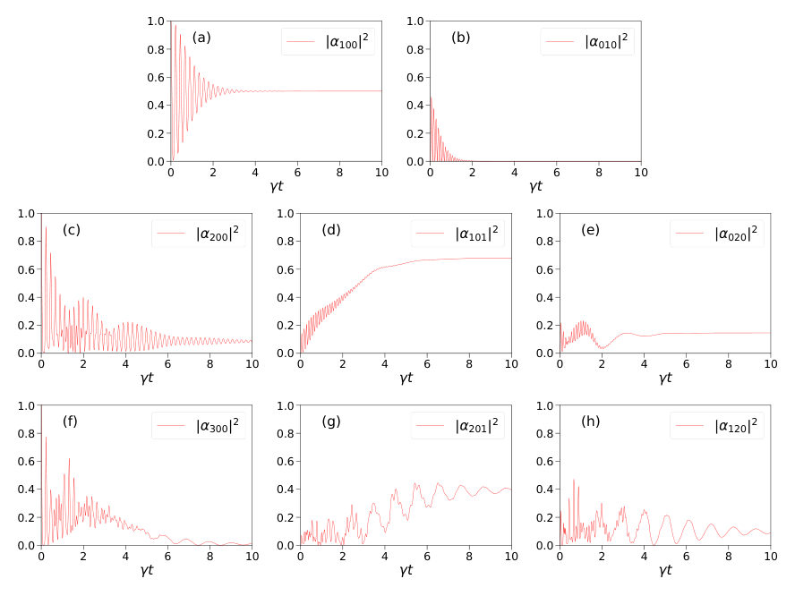
<figcaption class="paper-figure-caption"><b>Fig 5.</b> Figure 5 illustrates the influence of the parameter k in the rate-operator transformation C = k n2 under non- local dephasing. Varying k affects exclusively the characteristic timescale of the evolution: larger values of k lead to shorter evolution timescales. This behavior is advantageous for state-engineering applications based on non-Hermitian Hamiltonians. Analogous behavior is observed for N = 2 and N = 3. These observations motivate the use of the maximal admissible values of k. Figure 6 illustrates the influence of the initial state on the relaxation speed under non-local dephasing. The observed differences in relaxation rates between various initial states can be attributed to the...</figcaption>
</figure>
</div>

<p><strong>Summary.</strong> This paper applies the rate operator formalism to analyze the open Bose-Hubbard model, providing a systematic way to model non-Hermitian quantum evolution. By using the Rate Operator Quantum Jump method, the authors successfully engineer effective Hamiltonians that predict steady-state phases and transitions, even in regimes where traditional simulation techniques fail.</p>
<p><strong>Why it may be interesting.</strong> This work provides a powerful, systematic tool (ROQJ) to analyze open quantum dynamics, which is crucial for understanding realistic physical systems where environmental coupling dictates the final state and dynamics.</p>
<details>
<summary>Detailed structure</summary>
<p><strong>Main problem.</strong> The paper addresses the engineering of non-Hermitian dynamics and the characterization of phase structure in open quantum systems.</p>
<p><strong>Main result.</strong> The rate operator formalism successfully constructs effective non-Hermitian Hamiltonians that reveal unique steady states, even when standard methods fail, and allows for the controlled transition between distinct steady-state phases.</p>
<p><strong>Method.</strong> The core method is the Rate Operator Quantum Jump (ROQJ) formalism, which systematically unravels the master equation into stochastic pure-state trajectories.</p>
<p><strong>Model / system.</strong> The system studied is the Bose-Hubbard model subjected to environmental dephasing, modeled via a master equation (GKSL equation). The analysis compares local and non-local dephasing schemes.</p>
<p><strong>Key observables.</strong> Populations ($
ho_{N00, N00}$), absolute squares of amplitudes ($|\alpha|^2$), the imaginary part of the leading eigenvalue ($   ext{Im}(\lambda_1)$), and the expectation value of the energy ($\langle H/\gamma 
angle$).</p>
<p><strong>Important parameters / regimes.</strong> Interaction strength ($U$), dephasing rate parameters ($k$ or $\gamma$), and the non-Hermiticity control parameter introduced via the rate operator.</p>
<p><strong>Assumptions / limitations.</strong> The analysis assumes the rate operator $R_\psi$ is positive semi-definite for independent realizations, and it compares results derived from the ROQJ method against standard Monte Carlo wavefunction methods.</p>
<p><strong>Figures summary.</strong> Figures map key steady-state diagnostics ($    ext{Im}(\lambda_1)$ and $\langle H/\gamma 
angle$) across parameter planes for both local and non-local dephasing schemes, demonstrating parameter-dependent phase boundaries.</p>
<p><strong>Paper structure.</strong> The paper introduces the rate operator formalism, applies it to the Bose-Hubbard model, details the dynamical evolution using ROQJ, and finally characterizes the resulting steady-state structure and phase transitions.</p>
</details>
<details>
<summary>Abstract</summary>
<p>Non-Hermitian evolution can be realized through post-selection on stochastic pure-state trajectories arising in continuously monitored open quantum systems. The rate operator formalism provides a versatile and systematic framework for unraveling a master equation into stochastic pure-state evolutions, offering enhanced control over the resulting non-Hermitian dynamics. In the present work, we explore the applicability of the rate operator formalism as a tool for engineering non-Hermitian dynamics. Specifically, we apply this approach to the Bose-Hubbard model subject to environmental dephasing, examining its consequences for controlled state manipulation. Our analysis is framed within the broader contexts of quantum state engineering and measurement-induced phase transitions. We demonstrate that the rate operator formalism enables the construction of effective non-Hermitian Hamiltonians exhibiting a unique steady state-even in regimes where the standard Monte Carlo wavefunction method fails to produce one. Furthermore, we show that this framework facilitates transitions between distinct steady-state phases, governed by tunable parameters such as the interaction strength and a non-Hermiticity control parameter introduced via the rate operator formalism.</p>
</details>
<p><sub><a href="#top">↑ back to top</a></sub></p>

<p><a id="paper-2609.01760"></a></p>
<h3 id="piston-like-information-engine-ii-boundary-controlled-optimum-in-active-matter"><a href="http://arxiv.org/abs/2609.01760v1">Piston-Like Information Engine II: Boundary-Controlled Optimum in Active Matter</a></h3>
<p><strong>Authors:</strong> Laura Hoek, Neta Ben Ari, Rémi Goerlich, Saar Rahav, Yael Roichman<br>
<strong>Type:</strong> both · <strong>Category:</strong> statistical mechanics · <strong>PDF:</strong> <a href="https://arxiv.org/pdf/2609.01760v1">https://arxiv.org/pdf/2609.01760v1</a><br>
<strong>Analysis basis:</strong> full PDF text, analyzed in chunks
<strong>Topic relevance:</strong> 🔥 <code>non-equilibrium universality</code> <strong>4/5</strong> · <code>driven-dissipative phase transition</code> <strong>3/5</strong> · <code>quantum measurements</code> <strong>3/5</strong> · <code>Full counting statistics</code> <strong>2/5</strong> · <code>Keldysh / 2PI / non-Gaussian methods</code> <strong>2/5</strong> · <code>methods for driven-dissipative</code> <strong>2/5</strong> · <code>analog quantum simulation</code> <strong>1/5</strong> · <code>correlated / nonlocal dissipation</code> <strong>1/5</strong> · <code>scars &amp; prethermalization</code> <strong>1/5</strong></p>
<div class="figure-strip-hint">↔ Scroll figures horizontally</div>
<div class="paper-figures-scroll">
<figure class="paper-figure-card">
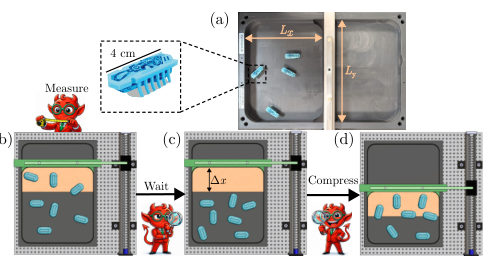
<figcaption class="paper-figure-caption"><b>Fig 1.</b> FIG. 1. Experimental setup and piston-like work- ing cycle. (a) Rectangular arena containing active parti- cles (bbots); inset: a single bbot. A linear actuator controls the movable boundary. Bottom: piston-like working cycle. (b) The number of bbots in the detection region, ∆xLy, is measured periodically (Ly = 29.2 cm). (c) If the region is oc- cupied, the boundary remains fixed. (d) If empty, the bound- ary moves inward, compressing the bbots. Measurements are spaced sufficiently far apart to be uncorrelated.</figcaption>
</figure>
<figure class="paper-figure-card">
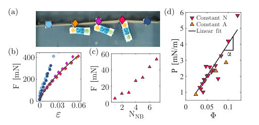
<figcaption class="paper-figure-caption"><b>Fig 2.</b> FIG. 2. Experimental pressure measurements. (a) Pho- tograph of the experimental setup with the flexible boundary; markers indicate the positions used for force calibration. (b) Force–strain calibration curves measured at the positions indi- cated in (a). (c) Force exerted by boundary-localized clusters of NNB bbots at fixed arena area, inferred from the measured boundary deflection. (d) Pressure P versus area fraction Φ. The black line is a linear fit with slope α. Red: fixed particle number with varying area; orange: fixed area with varying particle number.</figcaption>
</figure>
<figure class="paper-figure-card">
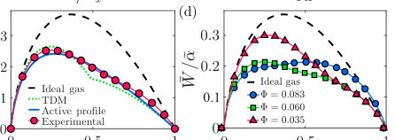
<figcaption class="paper-figure-caption"><b>Fig 3.</b> FIG. 3. Thermodynamic properties of the information engine. (a) One-dimensional projection of the bbots density, compared to the density of an ideal gas, and two simple mod- els of the boundary layer. (b) Inset: calculated probability p1 to find a detection region of width ∆x empty. Panel: the Shannon information per measurement. (c) The mean work per measurement, ¯ W/˜α, as a function of p1. Panels (a-c) cor- respond to experiments with area fraction Φ = 0.073. (d) Comparison of several ¯ W(p1) curves, obtained for different area fractions, to ¯ W/kBT = −p1 ln p1, expected for thermal particles.</figcaption>
</figure>
<figure class="paper-figure-card">
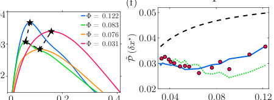
<figcaption class="paper-figure-caption"><b>Fig 4.</b> FIG. 4. Nonideal engine cycle with optimally chosen detection region. (a) Schematic depiction of free expansion experiments. (b) Position of piston as a function of time dur- ing free expansion. Bold line depicts the mean of 7 repetitions. (c) Schematic of time dependence of a cycle. The piston re- mains at L0 for several measurements; once the detection area is found to be empty, it is displaced to L1, after which the sys- tem takes a time of τexp to expand back to its initial volume. (d) p1(∆x⋆) as a function of area fraction Φ. Symbols are calculated using experimental data, while lines are based on simple models of bbot density: Uniform (black dashed line), TDM (green dotted line), and...</figcaption>
</figure>
<figure class="paper-figure-card">
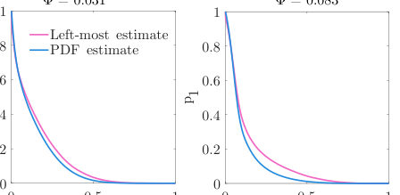
<figcaption class="paper-figure-caption"><b>Fig 5.</b> FIG. 5. Comparison of the empty-region probability p1(δx) obtained from the normalized single-bbot density profile (PDF estimate) and directly from the measured distribution of the leftmost bbot, for two representative area fractions, Φ = 0.031 and Φ = 0.083.</figcaption>
</figure>
</div>

<p><strong>Summary.</strong> This work develops and experimentally tests an information engine using active bristle bots to convert information into mechanical work. The study finds that the work output deviates significantly from predictions based on ideal thermal systems. Crucially, the optimal operating regime switches based on particle density, a feature confirmed even when considering realistic friction and finite-time cycle dynamics.</p>
<p><strong>Why it may be interesting.</strong> The work done here on active matter thermodynamics and non-equilibrium work extraction provides a physical realization of non-equilibrium statistical mechanics far from equilibrium, which is highly relevant to open quantum systems and energy transduction.</p>
<details>
<summary>Detailed structure</summary>
<p><strong>Main problem.</strong> The paper investigates information engines that extract work from active matter, comparing their performance to theoretical thermal systems.</p>
<p><strong>Main result.</strong> The active engine exhibits a qualitatively modified work-information relationship compared to thermal systems, and the optimal operating regime switches depending on particle density.</p>
<p><strong>Method.</strong> The work is calculated by analyzing the mean work extracted ($ar{W} = p_1 W_{st}$) based on the probability of finding an empty detection region ($p_1$) during a piston-like cycle.</p>
<p><strong>Model / system.</strong> The system uses self-propelled bristle bots (active matter) confined in a box, where work is extracted by periodically measuring the occupancy of a movable detection region near a piston.</p>
<p><strong>Key observables.</strong> Mean work per measurement ($ar{W}$), empty-region probability ($p_1$), and maximum power output ($ ilde{P}$).</p>
<p><strong>Important parameters / regimes.</strong> Particle density ($\Phi$), detection region size ($\Delta x$), and the energy scale ($  ilde{\alpha}$ vs. $k_B T$).</p>
<p><strong>Assumptions / limitations.</strong> The analysis assumes the active particle force scales linearly with density ($\alpha \Phi$), and later models incorporate dry friction and finite-time cycle constraints.</p>
<p><strong>Figures summary.</strong> Figures illustrate the experimental setup, pressure scaling ($P \propto \Phi$), comparisons of $ar{W}$ vs $p_1$ showing regime switches, and simulations of stick-slip dynamics under friction.</p>
<p><strong>Paper structure.</strong> The paper moves from defining the information engine concept and measuring work in active matter, to comparing results against ideal gas theory, analyzing the density-dependent switching of optimal operation, and finally modeling the cycle under realistic, non-ideal friction constraints.</p>
</details>
<details>
<summary>Abstract</summary>
<p>Information engines convert information into extractable work through measurements and feedback. We realize an engine that employs information to compress a gas of self-propelled bristle bots. Its work per measurement, $\bar{W}$, is controlled by the size of the detection region $Δx$ and the probability $p_1$ that this region is vacant. In thermal systems, $\bar{W}$ follows the universal form $-p_1 \ln p_1$, whereas the active engine shows a qualitatively modified relation. As particle density increases, the maximum of $\bar{W}(Δx)$ switches between two distinct operating regimes. Notably, this transition is also found in the solutions that maximize power output for finite-time cycles with dynamics affected by dry friction. We attribute this nonequilibrium feature to the accumulation of active particles near the boundaries.</p>
</details>
<p><sub><a href="#top">↑ back to top</a></sub></p>

<p><a id="paper-2609.02725"></a></p>
<h3 id="effective-quasiparticle-conserving-lindbladians-in-the-thermodynamic-limit"><a href="http://arxiv.org/abs/2609.02725v1">Effective quasiparticle conserving Lindbladians in the thermodynamic limit</a></h3>
<p><strong>Authors:</strong> Lea Lenke, Kai Phillip Schmidt<br>
<strong>Type:</strong> theory · <strong>Category:</strong> other · <strong>PDF:</strong> <a href="https://arxiv.org/pdf/2609.02725v1">https://arxiv.org/pdf/2609.02725v1</a><br>
<strong>Analysis basis:</strong> full PDF text, analyzed in chunks
<strong>Topic relevance:</strong> 🔥 <code>methods for driven-dissipative</code> <strong>4/5</strong> · <code>correlated / nonlocal dissipation</code> <strong>3/5</strong> · <code>driven-dissipative phase transition</code> <strong>3/5</strong> · <code>non-equilibrium universality</code> <strong>3/5</strong> · <code>Keldysh / 2PI / non-Gaussian methods</code> <strong>2/5</strong> · <code>analog quantum simulation</code> <strong>1/5</strong> · <code>quantum measurements</code> <strong>1/5</strong> · <code>scars &amp; prethermalization</code> <strong>1/5</strong></p>
<div class="figure-strip-hint">↔ Scroll figures horizontally</div>
<div class="paper-figures-scroll">
<figure class="paper-figure-card">
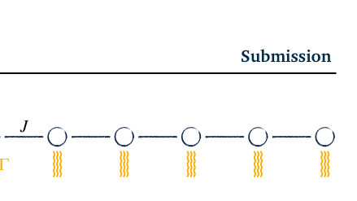
<figcaption class="paper-figure-caption"><b>Fig 1.</b> Figure 1: Illustration of the one-dimensional DTFIM. Neighboring spin-1/2 particles on a chain are coupled with an Ising interaction of strength J, subject to a magnetic field of strength h, and local dissipation with rate Γ.</figcaption>
</figure>
<figure class="paper-figure-card">
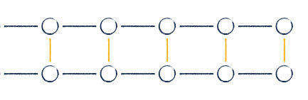
<figcaption class="paper-figure-caption"><b>Fig 2.</b> Figure 2: Illustration of the purified, one-dimensional DTFIM in Liouville space on an effective ladder geometry. Every spin-1/2 particle is represented by a rung dimer consisting of two sites, one for σj ⊗1 and one for 1 ⊗σj. It can also be seen as a representation of the Lindbladian in terms of qp, where the creation and annihilation operators b‡ j,+ and bj,+ act on one leg and b‡ j,−and bj,−on the other. Note that the two sites of a rung dimer j are not exactly identical in both representations, since the creation operators act on both sites of a rung dimer in the original spin representation (see Eqs. (7) and (8)).</figcaption>
</figure>
<figure class="paper-figure-card">
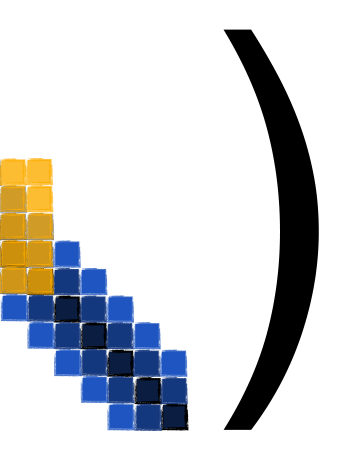
<figcaption class="paper-figure-caption"><b>Fig 3.</b> Figure 3: Pictorial representation of the matrix in the 2-qp sector after truncating the basis to (58) with D = 7 and n = 3. The blue diagonals contain the 1-qp operators and the yellow square contains the 2-qp operators.</figcaption>
</figure>
<figure class="paper-figure-card">
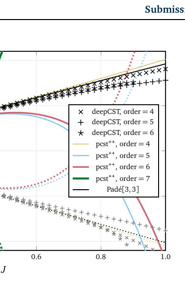
<figcaption class="paper-figure-caption"><b>Fig 4.</b> Figure 4: Real part of the eigenvalues ±ω±(k) in the 1-qp sector for the parameters h = Γ = 1 for k ∈{0,π} as a function of J. The lines represent the pcst++ expan- sion up to different orders. The colored solid lines represent k = 0 and the colored dotted lines k = π. The respective thin black lines represent the highest diagonal Padé approximants of the highest order pcst++ series. The scatter plots represent the deepCST expansion up to different orders. The bigger black markers represent k = 0 and the smaller gray markers k = π. Orders lower than 4 are not plotted.</figcaption>
</figure>
<figure class="paper-figure-card">
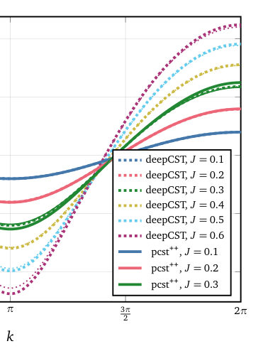
<figcaption class="paper-figure-caption"><b>Fig 5.</b> Figure 5: Real part of the eigenvalues ±ω±(k) in the 1-qp sector for the parameters h = Γ = 1 for different values of J as a function of k. The thick (thin) solid lines represent the pcst++ expansion up to 7th (6th) order. At J = 0.3 those two orders start to differ. The thick (thin) dotted lines represent the deepCST expansion up to 6th (5th) order. At J = 0.3 those two orders start to differ.</figcaption>
</figure>
</div>

<p><strong>Summary.</strong> This paper introduces advanced theoretical techniques, pcst++ and deepCST, to calculate effective quasiparticle-conserving Lindbladians for open quantum many-body systems in the thermodynamic limit. By applying these methods to the dissipative transverse-field Ising model, the authors demonstrate how to systematically handle dissipation while preserving the quasiparticle structure. This establishes a versatile tool for studying non-equilibrium steady states in complex quantum materials.</p>
<p><strong>Why it may be interesting.</strong> This work provides powerful, generalizable theoretical tools (pcst++/deepCST) for analyzing non-equilibrium steady states in interacting quantum systems, which is crucial for understanding open quantum dynamics in condensed matter.</p>
<details>
<summary>Detailed structure</summary>
<p><strong>Main problem.</strong> The primary challenge addressed is developing a systematic framework to construct effective quasiparticle-conserving Lindbladian operators directly in the thermodynamic limit for open quantum many-body systems.</p>
<p><strong>Main result.</strong> The authors successfully developed and applied two complementary methods, pcst++ and deepCST, demonstrating they can derive effective Lindbladians that preserve quasiparticle number in the thermodynamic limit.</p>
<p><strong>Method.</strong> The core methodology involves extending continuous similarity transformations (CSTs) from Hermitian Hamiltonians to non-Hermitian Lindbladians, enabling block diagonalization with respect to the quasiparticle number.</p>
<p><strong>Model / system.</strong> The study uses the dissipative transverse-field Ising chain (DTFIM) with local dissipation as a paradigmatic model. The system is analyzed by purifying the Lindbladian and mapping it to a quasiparticle basis.</p>
<p><strong>Key observables.</strong> The primary observables are the eigenvalues ($\lambda$) of the Lindbladian, from which the decay rates (inverse lifetimes) of elementary excitations are extracted. The Liouvillian gap is also a key diagnostic.</p>
<p><strong>Important parameters / regimes.</strong> The analysis focuses on the thermodynamic limit and treats the Ising interaction ($J$) as a small perturbation in the low-Ising regime.</p>
<p><strong>Assumptions / limitations.</strong> The methods assume that the continuous similarity transformations can be systematically applied to the non-Hermitian Lindbladian structure, and the analysis relies on perturbative expansions (linked-cluster/flow equations).</p>
<p><strong>Figures summary.</strong> Figure 8 compares the calculated inverse lifetime of the longest-living state in the 2-qp sector as a function of the coupling $J$ using both pcst++ (solid lines) and deepCST (scatter plots) expansions, showing convergence up to $J \approx 0.4$.</p>
<p><strong>Paper structure.</strong> The paper introduces the problem, details the two complementary theoretical frameworks (pcst++ and deepCST), applies these methods to the DTFIM, and analyzes the resulting effective Lindbladian structure and its spectral properties.</p>
</details>
<details>
<summary>Abstract</summary>
<p>Open quantum many-body systems are commonly described by Lindblad master equations, yet the treatment of Lindbladian operators in the thermodynamic limit remains a major challenge. We develop a framework for constructing effective quasiparticle-conserving Lindbladian operators directly in the thermodynamic limit. Our approach extends continuous similarity transformations to non-Hermitian open quantum systems and enables the systematic block diagonalization of Lindbladians with respect to the quasiparticle (qp) number. We formulate two complementary methods. The first, projective continuous similarity transformations (pcst++), generalizes perturbative continuous unitary transformations to Lindblad operators so that a linked-cluster expansion allows us to obtain high-order series expansions of the infinite system. The second, deepCST, extends directly evaluated enhanced perturbative continuous unitary transformations by combining the same qp-conserving generator with a perturbative truncation scheme that yields non-perturbative effective Lindbladian operators directly in thermodynamic limit. We apply pcst++ and deepCST to the dissipative transverse-field Ising chain with local dissipation. We focus on the low-Ising regime. We purify the Lindbladian by splitting each spin into two sites. A spin flip then corresponds to two qps. We derive and analyze the effective, qp-conserving Lindbladian in the sectors with zero to two qps. We show how the Ising interaction renormalizes the decay rates of elementary spin-flip excitations and provides the microscopic mechanism for a competition between coherent interactions and dissipation. Our work establishes perturbative and non-perturbative continuous similarity transformations as a versatile tool for deriving effective qp pictures of open quantum many-body systems in the thermodynamic limit.</p>
</details>
<p><sub><a href="#top">↑ back to top</a></sub></p>

<p><a id="paper-2609.02736"></a></p>
<h3 id="qarray-a-physics-informed-gpu-accelerated-simulator-for-quantum-dot-arrays"><a href="http://arxiv.org/abs/2609.02736v1">QArray+: A physics-informed GPU-accelerated simulator for quantum dot arrays</a></h3>
<p><strong>Authors:</strong> Pranav Vaidhyanathan, Barnaby van Straaten, Alice Petrillo, Rahul Marchand, Edwin De Nicolo, Menno Veldhorst, Brucek Khailany, Taylor L. Patti, Natalia Ares<br>
<strong>Type:</strong> theory · <strong>Category:</strong> other · <strong>PDF:</strong> <a href="https://arxiv.org/pdf/2609.02736v1">https://arxiv.org/pdf/2609.02736v1</a><br>
<strong>Analysis basis:</strong> full PDF text, analyzed in chunks
<strong>Topic relevance:</strong> 🔥 <code>methods for driven-dissipative</code> <strong>4/5</strong> · <code>driven-dissipative phase transition</code> <strong>3/5</strong> · <code>non-equilibrium universality</code> <strong>3/5</strong> · <code>Keldysh / 2PI / non-Gaussian methods</code> <strong>2/5</strong> · <code>analog quantum simulation</code> <strong>2/5</strong> · <code>correlated / nonlocal dissipation</code> <strong>1/5</strong> · <code>quantum measurements</code> <strong>1/5</strong></p>
<div class="figure-strip-hint">↔ Scroll figures horizontally</div>
<div class="paper-figures-scroll">
<figure class="paper-figure-card">
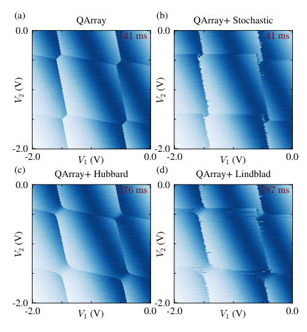
<figcaption class="paper-figure-caption"><b>Fig 1.</b> FIG. 1. Double dot charge stability diagram com- puted using four different models. a) The steady state charge stability diagram computed using QArray. b-d) The latched charge stability diagram computed using the QArray+ stochastic, spinless Hubbard and open quantum system mod- els, respectively. The stochastic CSD shows latching but not hybridization of charge states. The spinless Hubbard model shows just hybridization of charge states. The open quantum system model shows both effects. The CPU compute time for each 200 × 200 CSD is indicated in the top-right corner.</figcaption>
</figure>
<figure class="paper-figure-card">
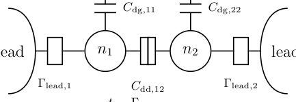
<figcaption class="paper-figure-caption"><b>Fig 2.</b> FIG. 2. Schematic of a quantum dot device with tun- nel and capacitive couplings. Each quantum dot carries charge ni and is tunnel-coupled to the source and drain leads with rates Γlead,i. The dots are mutually coupled through the inter-dot capacitance Cdd,12 = Cdd,21, the coherent inter-dot tunnel coupling t12, and the incoherent inter-dot transition rate Γinterdot,12. Gate electrodes at voltages Vgi are capaci- tively coupled to the dots; for clarity, any cross-capacitances are omitted. The legend indicates the symbols used to repre- sent tunnel, capacitive, and combined tunnel-capacitive cou- plings. Figure adapted from Fig. 1 of [26].</figcaption>
</figure>
<figure class="paper-figure-card">
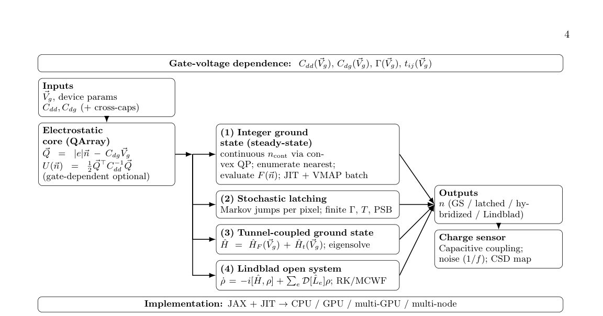
<figcaption class="paper-figure-caption"><b>Fig 3.</b> FIG. 3. Overview of QArray+ relative to QArray: shared electrostatic core with four interchangeable simulation heads (stochastic latching, tunnel-coupled ground state, Lindblad open-system evolution, and integer ground-state via continuous relaxation + candidate enumeration + energy selection), plus shared gate-voltage dependence, readout/noise, and JAX GPU acceleration.</figcaption>
</figure>
<figure class="paper-figure-card">
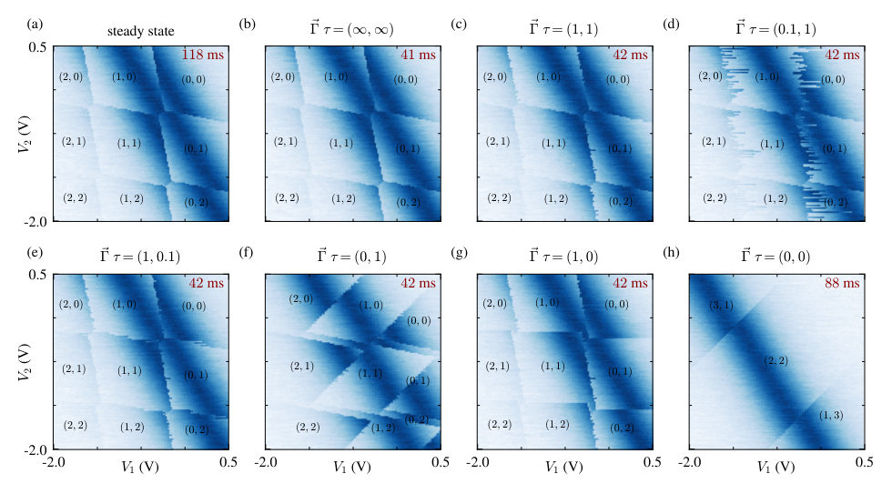
<figcaption class="paper-figure-caption"><b>Fig 4.</b> FIG. 4. Hole-based double-dot charge stability diagrams, each computed on a 200 × 200 gate-voltage grid, with the compute time indicated in the top-right corner and the charge state overlaid. (a) Steady-state solution obtained using the original QArray algorithm. (b) Charge stability diagram computed with the QArray+ stochastic solver in the limit of infinite tunnel rates and zero lead temperature, such that the system deterministically adopts the lowest-energy charge configuration. (c–g) Latched charge stability diagrams for finite tunnel rates. It is assumed that sufficient time elapses between the end of one row and the start of the next for the system to relax to the ground charge state...</figcaption>
</figure>
<figure class="paper-figure-card">
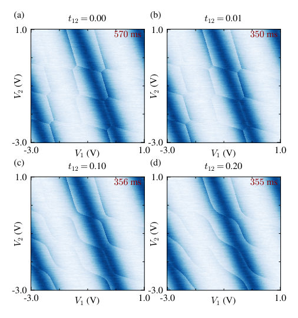
<figcaption class="paper-figure-caption"><b>Fig 5.</b> FIG. 6. Tunnel-coupled ground-state (spinless Hub- bard) charge stability diagrams for increasing inter- dot tunnel coupling t12. Coherent tunneling hybridizes near-degenerate interdot charge configurations, producing avoided crossings and fractional charge expectation values that broaden the interdot transition lines as t12 increases. Each panel shows a 200 × 200 gate-voltage scan; compute times on CPU are indicated in the top-right corners. The larger compute time for the t12 = 0 panel reflects one-time just-in-time compilation included in its timing; the remaining panels reuse the compiled kernel.</figcaption>
</figure>
</div>

<p><strong>Summary.</strong> This paper introduces QArray+, an advanced simulator for quantum dot arrays designed to overcome limitations in current models that assume steady-state physics. By incorporating gate-dependent tunnel coupling and a full quantum open-system description, it can accurately model non-equilibrium dynamics crucial for quantum device operation. The implementation leverages GPU acceleration to achieve high-throughput simulation of complex charge stability diagrams.</p>
<p><strong>Why it may be interesting.</strong> This work is highly relevant as it provides a sophisticated, scalable tool for simulating open quantum systems in solid-state architectures, bridging the gap between idealized equilibrium models and realistic, time-dependent quantum dynamics.</p>
<details>
<summary>Detailed structure</summary>
<p><strong>Main problem.</strong> Existing simulators for quantum dot arrays fail in non-equilibrium regimes because they rely on simplified models assuming instantaneous steady-state relaxation.</p>
<p><strong>Main result.</strong> QArray+ successfully unifies the simulation of coherent interdot hybridization and non-equilibrium latching dynamics, achieving high computational efficiency on GPU hardware.</p>
<p><strong>Method.</strong> The authors developed QArray+, which extends the QArray framework by incorporating gate-dependent tunnel coupling and a quantum open-system description using a Lindblad master equation.</p>
<p><strong>Model / system.</strong> The system is semiconductor quantum-dot arrays, simulated using models ranging from stochastic Markov jump processes to the Lindblad master equation, allowing for the calculation of Charge Stability Diagrams (CSDs).</p>
<p><strong>Key observables.</strong> Charge Stability Diagrams (CSDs), coherent interdot charge-state hybridization, and non-equilibrium latching dynamics.</p>
<p><strong>Important parameters / regimes.</strong> Gate voltages ($\vec{V}_g$), tunnel coupling strengths ($t_{ij}$), and the ratio of measurement rates to tunneling dynamics.</p>
<p><strong>Assumptions / limitations.</strong> The stochastic model assumes a single charge transition per time step, and the original models assume relaxation to a steady state much faster than the measurement timescale.</p>
<p><strong>Figures summary.</strong> Figures show comparisons of CSDs computed using various models (QArray, Lindblad, Hubbard), demonstrating the different physical regimes captured, and Figure 9 shows the scaling of computation time with tunnel-coupling density.</p>
<p><strong>Paper structure.</strong> The paper introduces QArray+ to address limitations in existing simulators, details the incorporation of open-system dynamics and gate-dependent coupling, presents the computational implementation in JAX/GPU, and validates the method by comparing results across different physical regimes.</p>
</details>
<details>
<summary>Abstract</summary>
<p>Semiconductor quantum-dot arrays are a compelling platform for scalable quantum technologies, yet their practical operation is hindered by the complexity of tuning large-scale devices. Existing automation tools rely on simplified physical models---such as constant-capacitance approximations and equilibrium Hubbard models---which assume instantaneous relaxation to a steady state. These frameworks fail in experimentally critical regimes where measurement rates exceed tunneling dynamics, necessitating more sophisticated non-equilibrium control strategies. To bridge this gap, we introduce QArray+, an extension of the QArray framework that incorporates gate-dependent tunnel coupling and a quantum open-system description of dissipative processes. This approach enables the unified simulation of coherent interdot charge-state hybridization and the non-equilibrium latching dynamics essential for training robust machine-learning models for automated device operation. Implemented in JAX with GPU acceleration, QArray+ scales across GPUs and multi-node systems. For example, a charge stability diagram for a 100X100 grid of gate voltages over 64 dots can be computed in $\sim0.17\,\mathrm{s}$ on multiple GPUs. Since interdot interactions are short-ranged and the corresponding tuning corrections are local, simulations at these scales capture the physics relevant to even larger devices. These capabilities support high-throughput dataset generation for automated device tuning.</p>
</details>
<p><sub><a href="#top">↑ back to top</a></sub></p>

<p><a id="paper-2609.02586"></a></p>
<h3 id="memory-driven-topological-defects-and-unconventional-long-range-order"><a href="http://arxiv.org/abs/2609.02586v1">Memory-driven Topological Defects and Unconventional Long-Range Order</a></h3>
<p><strong>Authors:</strong> Ziyang Ding, Zi Cai<br>
<strong>Type:</strong> theory · <strong>Category:</strong> statistical mechanics · <strong>PDF:</strong> <a href="https://arxiv.org/pdf/2609.02586v1">https://arxiv.org/pdf/2609.02586v1</a><br>
<strong>Analysis basis:</strong> full PDF text, analyzed in chunks
<strong>Topic relevance:</strong> 🔥 <code>non-equilibrium universality</code> <strong>4/5</strong> · <code>driven-dissipative phase transition</code> <strong>3/5</strong> · <code>Keldysh / 2PI / non-Gaussian methods</code> <strong>2/5</strong> · <code>methods for driven-dissipative</code> <strong>2/5</strong> · <code>Frenkel-Kontorova</code> <strong>1/5</strong> · <code>analog quantum simulation</code> <strong>1/5</strong> · <code>correlated / nonlocal dissipation</code> <strong>1/5</strong></p>
<div class="figure-strip-hint">↔ Scroll figures horizontally</div>
<div class="paper-figures-scroll">
<figure class="paper-figure-card">
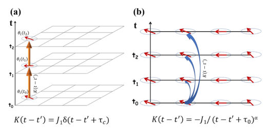
<figcaption class="paper-figure-caption"><b>Fig 1.</b> FIG. 1: Sketch of (a) 2D model with short-range antiferro- magnetic retarded interactions and (b) 1D model with long- range ferromagnetic retarded interactions</figcaption>
</figure>
<figure class="paper-figure-card">
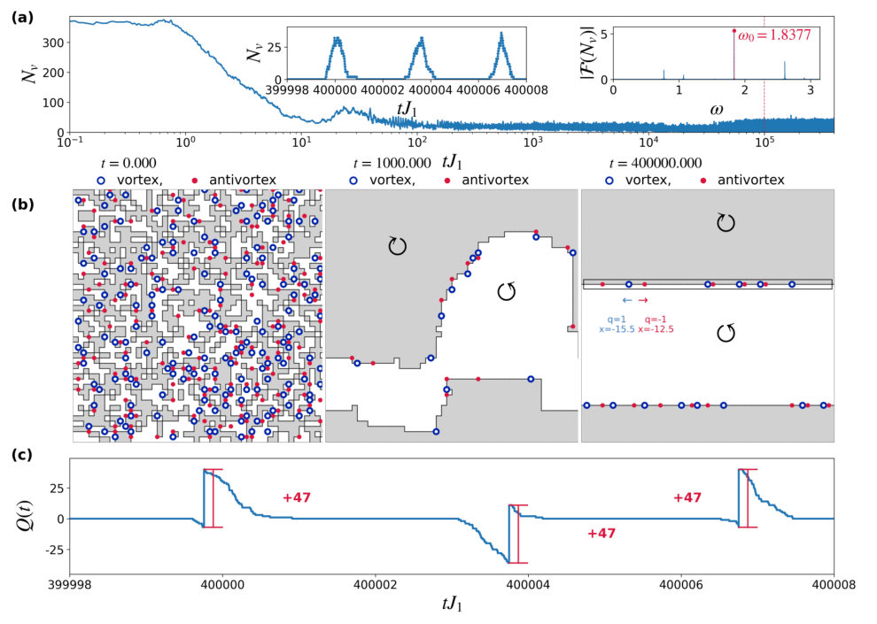
<figcaption class="paper-figure-caption"><b>Fig 2.</b> FIG. 2: (a) Dynamics of the total vortex number Nv following a quench from T = J to 0.05J. Left inset: late-time dynamics of Nv. Right inset: Fourier spectrum showing a peak at ω0 ≈2ωc. (b) Snapshots of DWs and vortices at initial, intermediate, and late times. Gray (white) regions indicate clockwise (counterclockwise) rotation; open (solid) circles denote vortices (an- tivortices). (c) The net dipole moment Q(t) along the upper DW in (b). Parameters: J1 = γ = I = J, τc = 2J−1.</figcaption>
</figure>
<figure class="paper-figure-card">
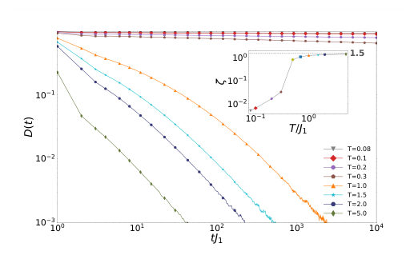
<figcaption class="paper-figure-caption"><b>Fig 3.</b> FIG. 3: D(t) for a single rotor with α = 3/2 across various temperatures T, which exhibit power-law decay D(t) ∼t−ζ</figcaption>
</figure>
<figure class="paper-figure-card">
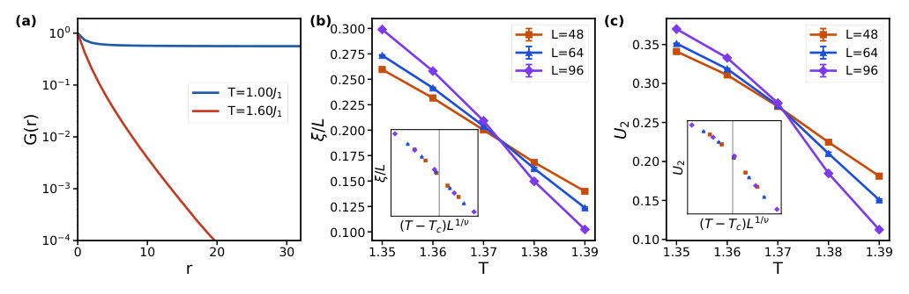
<figcaption class="paper-figure-caption"><b>Fig 4.</b> FIG. 4: (a)G(r) at low and high temperature; (b) Normalized correlation length ξ/L and (c) Binder cumulant as a function of temperature for various L. The insets are the data collapse with the optimal ν. Parameters: I = γ = J1 = J, τ0 = J−1.</figcaption>
</figure>
<figure class="paper-figure-card">
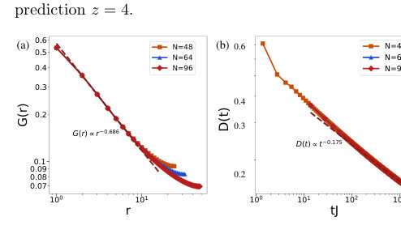
<figcaption class="paper-figure-caption"><b>Fig 5.</b> FIG. 5: (a) G(r) and (b) D(t) at critical point (Tc = 1.373J) with various L. Parameters: I = γ = J1 = J,τ0 = J−1.</figcaption>
</figure>
</div>

<p><strong>Summary.</strong> This work explores non-equilibrium physics in systems with memory-dependent interactions, showing how these temporal couplings can induce novel forms of order. Key findings include the stabilization of true long-range order in 1D and the emergence of helical dynamics involving topological defects in 2D. The research establishes engineered temporal interactions as a powerful paradigm for non-equilibrium many-body physics.</p>
<p><strong>Why it may be interesting.</strong> The explicit derivation of unconventional critical exponents ($z=4$) and the demonstration of finite-temperature phase transitions in non-equilibrium settings provide new theoretical tools for understanding complex dynamics beyond equilibrium statistical mechanics.</p>
<details>
<summary>Detailed structure</summary>
<p><strong>Main problem.</strong> The study investigates non-equilibrium ordering and topological defects in many-body systems driven by time-delayed self-interactions mediated by a memory-feedback mechanism.</p>
<p><strong>Main result.</strong> The memory feedback mechanism can stabilize true long-range order at finite temperatures, circumventing theorems like Mermin-Wagner, and generating unique helical vortex dynamics in 2D systems.</p>
<p><strong>Method.</strong> The analysis employs continuum field theory, spin-wave approximations, and detailed analysis of correlation functions (spatial, temporal, and velocity) across different temperature regimes.</p>
<p><strong>Model / system.</strong> The core model is an interacting rotor system governed by an equation of motion incorporating short-range and long-range retarded memory forces, applicable in 1D and 2D geometries.</p>
<p><strong>Key observables.</strong> Correlation functions G(r), D(t), and G_v(r); topological defects (vortices) and domain walls (DWs); dynamical critical exponent z.</p>
<p><strong>Important parameters / regimes.</strong> The memory kernel decay exponent $\alpha$ (for 1D), the delay time $\tau_c$ (for 2D), and the temperature $T$ relative to interaction strengths $J_1$.</p>
<p><strong>Assumptions / limitations.</strong> The analysis relies on linearizing the equations of motion for low-temperature regimes and utilizing approximations like the Spin-Wave Approximation (SWA).</p>
<p><strong>Figures summary.</strong> Figures illustrate the decay of correlation functions (algebraic vs. exponential) at varying temperatures, demonstrating the persistence of quasi-long-range order and the helical motion of vortices.</p>
<p><strong>Paper structure.</strong> The paper progresses by analyzing the 2D model (focusing on vortex dynamics and symmetry breaking) and then analyzing the 1D model (focusing on long-range order and the Mermin-Wagner circumvention), concluding with a comparison of results.</p>
</details>
<details>
<summary>Abstract</summary>
<p>We investigate many-body systems with time-delayed self-interactions mediated by a memory-feedback mechanism. We show that such temporal interactions generate non-equilibrium orders and unique topological defects absent in equilibrium-specifically, helical vortices wherein opposite vorticities propagate in reverse directions along domain walls. In one dimension, memory feedback stabilizes true long-range order against weak noise, thereby circumventing the Mermin-Wagner theorem and resulting in an unconventional finite-temperature phase transition with a dynamical exponent $z = 4$. Physical realizations of these memory-driven non-equilibrium systems using active mechatronic metamaterials has also been proposed. These results demonstrate engineered temporal interactions as a powerful paradigm for non-equilibrium many-body physics.</p>
</details>
<p><sub><a href="#top">↑ back to top</a></sub></p>

<p><a id="paper-2609.02351"></a></p>
<h3 id="nonequilibrium-corrections-to-conserved-ising-criticality-in-scalar-active-matter-ward-identities-spectrum-and-long-crossovers"><a href="http://arxiv.org/abs/2609.02351v1">Nonequilibrium corrections to conserved Ising criticality in scalar active matter: Ward identities, spectrum, and long crossovers</a></h3>
<p><strong>Authors:</strong> Piotr Zdybel<br>
<strong>Type:</strong> theory · <strong>Category:</strong> statistical mechanics · <strong>PDF:</strong> <a href="https://arxiv.org/pdf/2609.02351v1">https://arxiv.org/pdf/2609.02351v1</a><br>
<strong>Analysis basis:</strong> full PDF text, analyzed in chunks
<strong>Topic relevance:</strong> 🔥 <code>non-equilibrium universality</code> <strong>4/5</strong> · <code>Keldysh / 2PI / non-Gaussian methods</code> <strong>3/5</strong> · <code>driven-dissipative phase transition</code> <strong>3/5</strong> · <code>methods for driven-dissipative</code> <strong>2/5</strong> · <code>correlated / nonlocal dissipation</code> <strong>1/5</strong></p>
<div class="figure-strip-hint">↔ Scroll figures horizontally</div>
<div class="paper-figures-scroll">
<figure class="paper-figure-card">
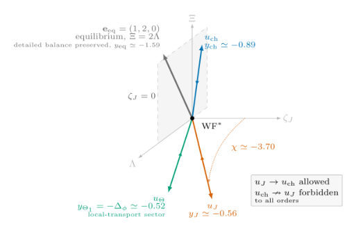
<figcaption class="paper-figure-caption"><b>Fig 1.</b> FIG. 1. Perturbation space around the passive conserved Wilson–Fisher fixed point (WF∗, filled circle) in d = 3. Thin gray axes are the gradient-active couplings (Λ, Ξ, ζJ); the shaded patch is the chemical plane ζJ = 0. The thick gray ray is the equilibrium tangent eeq = (1, 2, 0), along which Ξ = 2Λ and detailed balance is preserved. Colored rays are the three genuine nonequilibrium scaling fields, with the eigenvalues of Table II; inward arrowheads indicate that all three are ir- relevant. Quotienting by the equilibrium direction gives the (ac, aJ) plane of Eq. (2). The directions of uch and uJ follow from Eqs. (68) and (70); the dotted arc shows the chemical ad- mixture χ ≃−3.70 of a...</figcaption>
</figure>
<figure class="paper-figure-card">
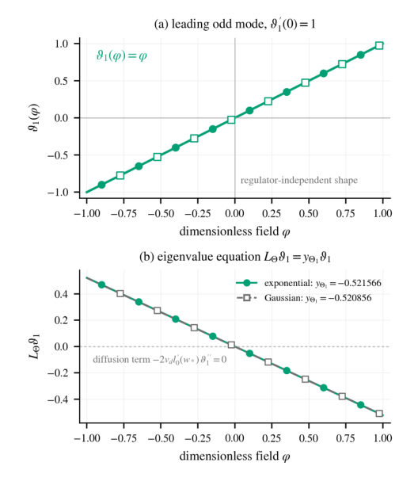
<figcaption class="paper-figure-caption"><b>Fig 2.</b> FIG. 2. Leading odd local-transport eigenfield at the passive fixed point. (a) With ϑ′ 1(0) = 1, the eigenfunction is ϑ1(φ) = φ and has the same shape for the exponential (filled circles) and Gaussian (open squares) regulators. (b) Since ϑ′′ 1 = 0, the field-dependent diffusion term in LΘ vanishes identically. The eigenvalue equation is saturated by the scaling drift and gives yΘ1 = −∆ϕ.</figcaption>
</figure>
<figure class="paper-figure-card">
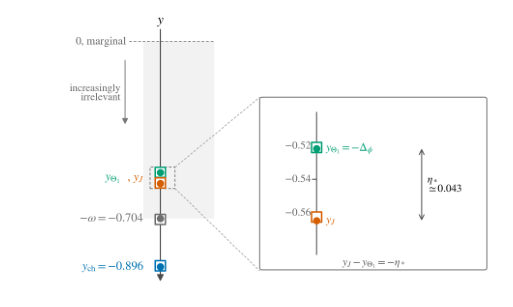
<figcaption class="paper-figure-caption"><b>Fig 3.</b> FIG. 4. Three-dimensional correction-to-scaling spectrum for the exponential (filled circles) and Gaussian (open squares) regulators. The shaded band |y| &lt; ω contains perturbations that decay more slowly than the leading equilibrium correc- tion to scaling. The inset resolves the near-degenerate pair yΘ1 and yJ, whose separation is yJ −yΘ1 = −η∗.</figcaption>
</figure>
<figure class="paper-figure-card">
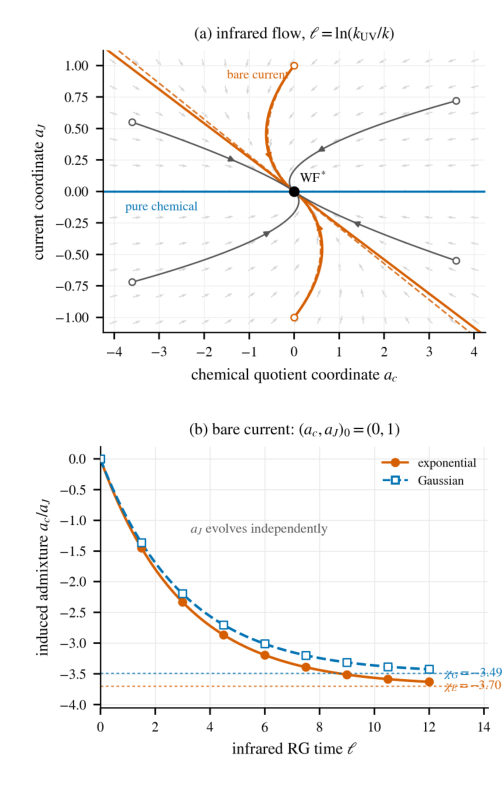
<figcaption class="paper-figure-caption"><b>Fig 4.</b> FIG. 3. Linearized infrared flow in the quotient plane. (a) The chemical axis aJ = 0 is invariant, whereas a current per- turbation induces a chemical component and approaches the slow current eigenline before reaching WF∗. Arrows point to- ward increasing infrared RG time ℓ. Solid trajectories use the exponential regulator; dashed curves show the Gaussian bare- current trajectory and eigenline. (b) Chemical admixture gen- erated from (ac, aJ)ℓ=0 = (0, 1), approaching χE = −3.70 and χG = −3.49. The one-way generation directly visualizes the triangular quotient flow.</figcaption>
</figure>
<figure class="paper-figure-card">
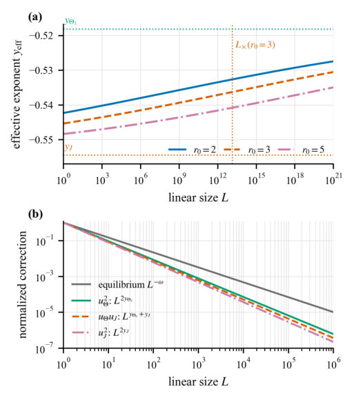
<figcaption class="paper-figure-caption"><b>Fig 5.</b> FIG. 5. Long crossover caused by the near-degenerate lo- cal and current-like odd scaling fields, using the reference- informed exponents of Eq. (64). (a) Effective expo- nent of Eq. (85) for three initial amplitude ratios A0 = AJuJ/(AΘuΘ). For A0 = 3 the two terms become equal only near L× ≃1.4 × 1013, so the measured slope is an amplitude- dependent interpolation between yJ and yΘ1 over the entire accessible range. Ratios |A0| ≤1 do not produce a macro- scopic crossover. (b) For an even observable the nonequilib- rium corrections enter quadratically, Eq. (78), and all three decay faster than the leading equilibrium correction L−ω. All amplitudes are set to unity; ω is the...</figcaption>
</figure>
</div>

<p><strong>Summary.</strong> This theoretical work investigates how non-equilibrium effects perturb the critical behavior of conserved Ising models in active matter. Using Functional Renormalization Group techniques, the authors calculate the scaling dimensions of these perturbations. They find that the two most relevant non-equilibrium modes are nearly degenerate in 3D, indicating extremely slow relaxation dynamics in the system.</p>
<p><strong>Why it may be interesting.</strong> The study provides rigorous RG techniques to analyze non-equilibrium steady states, which is crucial for understanding driven systems far from thermal equilibrium, a key area of modern condensed matter theory.</p>
<details>
<summary>Detailed structure</summary>
<p><strong>Main problem.</strong> The paper analyzes the nonequilibrium corrections to conserved Ising criticality in scalar active matter, aiming to determine the slowest decaying perturbations away from the passive Wilson-Fisher fixed point.</p>
<p><strong>Main result.</strong> The two most slowly decaying nonequilibrium modes are found to be nearly degenerate in $d=3$, suggesting unusually large crossover scales, and the analysis confirms the absence of additional contact counterterms at two loops.</p>
<p><strong>Method.</strong> The study employs Functional Renormalization Group (FRG) calculations, starting from the Martin-Siggia-Rose-Janssen-De Dominicis (MSRJD) action, and utilizes Ward identities to constrain the renormalization flow.</p>
<p><strong>Model / system.</strong> The system is scalar active matter described by a field $\phi(x, t)$ whose dynamics are out of equilibrium due to field-dependent noise-to-mobility ratios ($\Theta(\phi)$) and gradient activity terms. The passive reference theory is related to conserved Cahn-Hilliard or Model-B dynamics.</p>
<p><strong>Key observables.</strong> RG eigenvalues characterizing decay rates ($y_{\Theta 1}, y_J, y_{ch}$), and the anomalous dimension $\eta$.</p>
<p><strong>Important parameters / regimes.</strong> Dimensionality $d=3$ (and $d=4-\epsilon$), and the ratio of the two slowest modes separated by the Ising anomalous dimension $\eta$.</p>
<p><strong>Assumptions / limitations.</strong> The analysis relies on a specific functional truncation of the FRG and assumes no further contact anomaly for the relevant operators.</p>
<p><strong>Figures summary.</strong> Figure 1 illustrates the perturbation space around the passive WF fixed point in $d=3$. Figure 7 shows numerical convergence checks for the FRG calculation across varying polynomial orders and momentum windows.</p>
<p><strong>Paper structure.</strong> The paper proceeds by defining the active dynamics via the MSRJD action, applying FRG to find the stability matrix eigenvalues, using Ward identities to enforce conservation laws, and finally performing explicit two-loop calculations to confirm the degeneracy and scaling behavior of the slowest modes.</p>
</details>
<details>
<summary>Abstract</summary>
<p>Active scalar field theories break detailed balance in two physically distinct ways: through a field-dependent noise-to-mobility ratio $Θ(φ)=D(φ)/M(φ)$, and through the gradient activity of Active Model~B+. We classify the resulting perturbations of the conserved Wilson-Fisher fixed point in three dimensions. Working from the Martin-Siggia-Rose-Janssen-De~Dominicis (MSRJD) action, a functional renormalization-group (FRG) calculation shows that the transport sector has a block-triangular stability matrix whose leading odd mode has $y_{Θ_1}=-Δ_φ$, while quotienting the gradient sector by its detailed-balance-preserving tangent leaves a chemical and a current-like mode. Two smooth regulators give $y_{Θ_1}\simeq-0.52$, $y_J\simeq-0.56$ and $y_{\rm ch}\simeq-0.89$. The translation Ward identity represents the current operator by a stress-tensor divergence modulo chemical gradients; conservation and causality then make the active stability matrix triangular to all loop orders, and an explicit two-loop calculation in $d=4-ε$ finds no additional contact counterterm. The two slowest modes are separated only by the Ising anomalous dimension, $y_J-y_{Θ_1}=-η$. This relation is a dimension count that holds provided neither operator acquires a further contact anomaly, a condition we establish within the present truncation for $\mathcal O_Θ$ and verify through two loops for $\mathcal O_J$; under it the $d=3$ reference Ising value gives $y_{Θ_1}\simeq-0.5181$ and $y_J\simeq-0.5544$. We derive the parity-resolved finite-size scaling of this near degeneracy, identify block observables that separate the two modes, and show that when the current amplitude dominates the crossover scale lies far beyond any accessible system size.</p>
</details>
<p><sub><a href="#top">↑ back to top</a></sub></p>

<p><a id="paper-2609.02643"></a></p>
<h3 id="dynamical-stabilisation-of-a-quantum-fluid-using-a-single-topological-defect"><a href="http://arxiv.org/abs/2609.02643v1">Dynamical stabilisation of a quantum fluid using a single topological defect</a></h3>
<p><strong>Authors:</strong> Deborah Capecchi, Paolo Comaron, Antonio Gianfrate, Milena De Giorgi, Dario Ballarini, Daniele Sanvitto, Franco Dalfovo, Dimitrios Trypogeorgos<br>
<strong>Type:</strong> both · <strong>Category:</strong> quantum gases · <strong>PDF:</strong> <a href="https://arxiv.org/pdf/2609.02643v1">https://arxiv.org/pdf/2609.02643v1</a><br>
<strong>Analysis basis:</strong> full PDF text, analyzed in chunks
<strong>Topic relevance:</strong> 🔥 <code>analog quantum simulation</code> <strong>4/5</strong> · <code>driven-dissipative phase transition</code> <strong>2/5</strong> · <code>methods for driven-dissipative</code> <strong>2/5</strong> · <code>non-equilibrium universality</code> <strong>2/5</strong> · <code>Keldysh / 2PI / non-Gaussian methods</code> <strong>1/5</strong> · <code>quantum optics experiment</code> <strong>1/5</strong></p>
<div class="figure-strip-hint">↔ Scroll figures horizontally</div>
<div class="paper-figures-scroll">
<figure class="paper-figure-card">
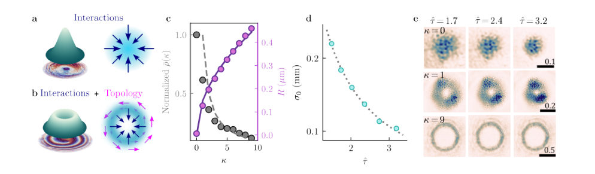
<figcaption class="paper-figure-caption"><b>Fig 1.</b> FIG. 1. Topological stabilization of the condensate. a For an initially gaussian-shaped condensate, attractive interactions cause a monotonic increase of the density and a corresponding decrease of the width. b In the presence of a vortex with topological charge κ, the phase singularity causes the density at the center to vanish, and induces an azimuthal velocity; the measured phase is shown below the density in both a and b. c With increasing vortex charge the measured ring radius R increases and the average ring density ¯ρ(κ) normalized to the density of the κ = 0 case decreases. Solid and dashed lines correspond to σ0 √κ and 1/κ, respectively. d The experimentally measured size σ0 of the...</figcaption>
</figure>
<figure class="paper-figure-card">
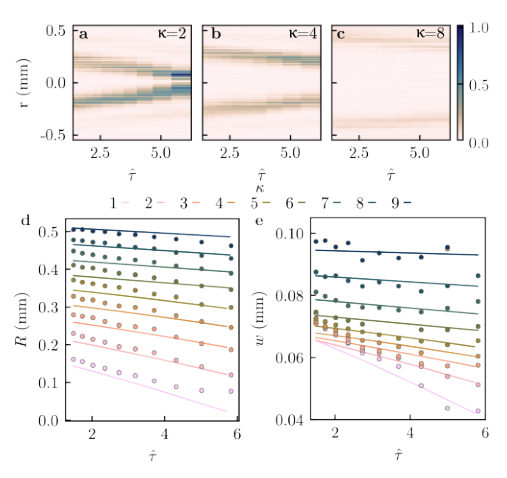
<figcaption class="paper-figure-caption"><b>Fig 2.</b> FIG. 2. Condensate geometry. a-c Experimental radial pro- files of the ring condensate density as a function of ˆτ for κ = 2, 4, 8. For large κ, the evolution for the ring becomes slower and slower, due to a balance between attractive inter- actions and topological constraints. d, e Radius R and width w of the ring as a function of the effective time ˆτ for different values of κ (legend on top); circles and lines represent the experimentally measured values and the results of GPE sim- ulations, respectively.</figcaption>
</figure>
<figure class="paper-figure-card">
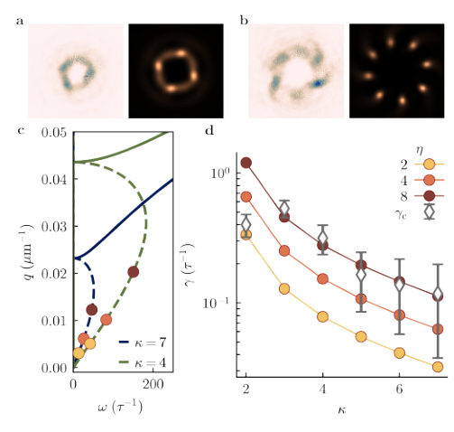
<figcaption class="paper-figure-caption"><b>Fig 3.</b> FIG. 3. Growth of Bogoliubov modes in the ring. a,b Density profiles from the experiment (left) and numerical simulations with the GPE (right) for κ = 4 at ˆτ = 8.3 (a), and κ = 7 at ˆτ = 13.1(b). c The frequency of the Bogoliubov modes is purely imaginary at small q and real for large q. The pre- dictions for the corresponding imaginary and real parts are shown as dashed and solid lines, respectively. The modes η permitted by the ring periodicity are indicated by colored circles. d Growth rates of the dominant modes (circles) ex- tracted from the Bogoliubov analysis at ˆτ = 6.8 are plotted as a function of κ. They agree well with the growth rate γc calculated from the GPE simulations...</figcaption>
</figure>
<figure class="paper-figure-card">
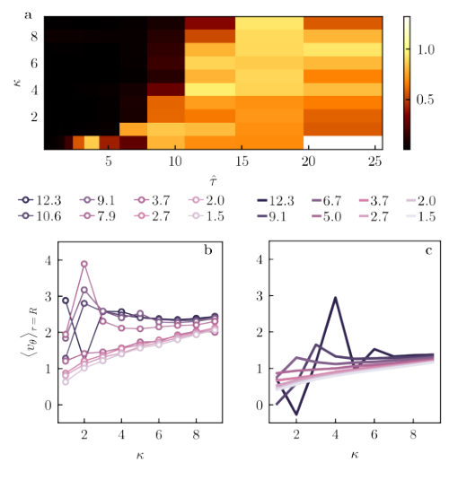
<figcaption class="paper-figure-caption"><b>Fig 4.</b> FIG. 4. a. The amplitude of the dominant Bogoliubov mode normalised to ¯ρ from GPE simulations. The time at which the ring collapses forming a solitonic pattern, can be roughly identified as the time when this quantity is 0.5. The col- lapse time is delayed by an order of magnitude as κ increases. The collapse dynamics affect the distribution of the azimuthal velocity shown in b (experiment) and c (GPE simulations). The different colours correspond to different times as in leg- end. For ˆτ &lt; 9 the azimuthal velocity scales linearly with κ, as expected for a quantized circulation; however, at higher values of ˆτ large variations appear when κ is small, due to the complex dynamics leading to...</figcaption>
</figure>
</div>

<p><strong>Summary.</strong> This research demonstrates that imposing a topological defect, such as a quantized vortex, can dramatically stabilize a quantum fluid suffering from attractive interactions, preventing rapid collapse. By modeling the system with the GPE and analyzing the Bogoliubov spectrum, the authors show that the vortex's circulation counteracts the collapse, delaying it significantly. The study bridges theoretical predictions of instability with direct experimental measurements in quantum optics.</p>
<p><strong>Why it may be interesting.</strong> This work provides a concrete, experimentally verifiable platform (quantum fluid of light) to study fundamental many-body physics concepts like collapse dynamics and topological stabilization, which are central to understanding BEC behavior.</p>
<details>
<summary>Detailed structure</summary>
<p><strong>Main problem.</strong> The study investigates how non-trivial topology, introduced via quantized vortices, dynamically stabilizes a quantum fluid that would otherwise undergo collapse due to attractive inter-particle interactions.</p>
<p><strong>Main result.</strong> The presence of a vortex significantly delays the collapse time of the Bose-Einstein condensate (BEC) by an order of magnitude, stabilizing the fluid into a persistent ring structure.</p>
<p><strong>Method.</strong> The dynamics are modeled using the Gross-Pitaevskii equation (GPE) and analyzed through Bogoliubov excitation spectrum calculations to predict instability growth rates.</p>
<p><strong>Model / system.</strong> The system is an analogue of a two-dimensional BEC with large attractive interactions, realized experimentally using a quantum fluid of light propagating in geometry. The dynamics are governed by a GPE-like equation.</p>
<p><strong>Key observables.</strong> Condensate size ($\sigma_0$), ring radius ($R$), ring width ($w$), collapse time delay ($\hat{	au}_c$), and the growth rate ($\gamma$) of Bogoliubov modes.</p>
<p><strong>Important parameters / regimes.</strong> Vortex topological charge ($\kappa$), interaction strength ($g$), and the effective time/propagation distance ($\hat{	au}$).</p>
<p><strong>Assumptions / limitations.</strong> Neglect of laser absorption (at large detuning) and the assumption that the Bogoliubov spectrum can be treated adiabatically for instability analysis.</p>
<p><strong>Figures summary.</strong> Figures illustrate the geometric effects of vortices on the condensate ring, the dependence of $R$ and $w$ on $\kappa$, and the comparison between theoretically predicted and numerically extracted Bogoliubov instability growth rates.</p>
<p><strong>Paper structure.</strong> The paper establishes the physical analogy and the collapse mechanism, then introduces the role of vortices to stabilize the system. It proceeds to analyze the ring dynamics, predict fragmentation via modulation instability using Bogoliubov theory, and finally compares these theoretical predictions with experimental measurements of density and velocity fields.</p>
</details>
<details>
<summary>Abstract</summary>
<p>The size and shape of a quantum fluid in equilibrium is strongly influenced by the inter-particle interactions. In the attractive interaction regime, atomic quantum fluids ultimately collapse in a violent process that expels most of the particles from the macroscopically occupied state. Here, we use a quantum fluid of light in propagating geometry as an analogue to a two-dimensional Bose-Einstein condensate (BEC) with large attractive interactions to show that non-trivial topology significantly alters the dynamical behaviour of the collapse, enhancing the BEC stability and delaying the collapse time by an order of magnitude. We measure direct experimental signatures of topology affecting quantum hydrodynamics, unveiling the inherent competition between attractive nonlinearities, that lead to the collapse, and the preservation of topological charge from a multi-charged vortex. We fully characterise the collapse process in coordinate space and the eventual `solitonification' of the system and connect it to the mode structure of the excitation spectrum.</p>
</details>
<p><sub><a href="#top">↑ back to top</a></sub></p>

<p><a id="paper-2609.02841"></a></p>
<h3 id="exponential-speedup-of-polarization-stabilization-for-long-distance-dwdm-quantum-networks"><a href="http://arxiv.org/abs/2609.02841v1">Exponential speedup of polarization stabilization for long distance DWDM quantum networks</a></h3>
<p><strong>Authors:</strong> Jinyi Du, En Teng Lim, Xingjian Zhang, Hongwei Gao, George F. R. Chen, Dawn T. H. Tan, Alexander Ling<br>
<strong>Type:</strong> experiment · <strong>Category:</strong> quantum information and computing · <strong>PDF:</strong> <a href="https://arxiv.org/pdf/2609.02841v1">https://arxiv.org/pdf/2609.02841v1</a><br>
<strong>Analysis basis:</strong> full PDF text, analyzed in chunks
<strong>Topic relevance:</strong> 🔥 <code>quantum optics experiment</code> <strong>4/5</strong> · <code>QC/QI experiment</code> <strong>3/5</strong> · <code>quantum measurements</code> <strong>3/5</strong> · <code>interference shaping light</code> <strong>1/5</strong></p>
<div class="figure-strip-hint">↔ Scroll figures horizontally</div>
<div class="paper-figures-scroll">
<figure class="paper-figure-card">
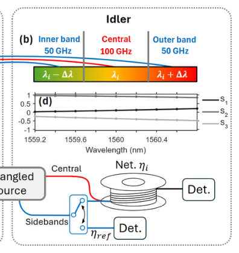
<figcaption class="paper-figure-caption"><b>Fig 1.</b> Fig. 1 Concept of wavelength-bracketed and switch-enabled polarization feedback. The gray dashed enclosures indicate the signal (left) and idler (right) arms. (a,b) Spectral allocation of the signal and idler channels. The inner 50 GHz signal and idler channels form one entangled sideband pair, while the outer 50 GHz signal and idler channels form the other. The two sideband pairs bracket the central 100 GHz signal-idler pair at wavelength offsets ±∆λ. (c,d) Smooth and continuous wavelength-dependent evolution of the Stokes vectors in the 87 km signal and 46 km idler network fibres. (e) Local-reference switching of the sidebands. The optical switches reconfigure only the paths of the...</figcaption>
</figure>
<figure class="paper-figure-card">
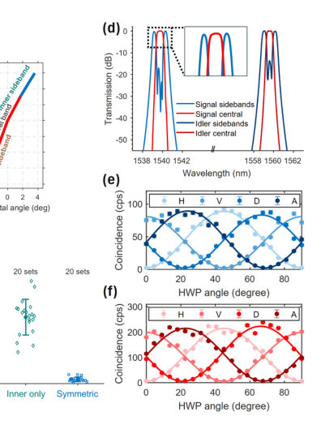
<figcaption class="paper-figure-caption"><b>Fig 2.</b> Fig. 2 Wavelength-bracketed estimation of the central-channel polarization response. (a) Wavelength-dependent output polarization of the 87 km fibre spools, measured by scanning a fixed polarization laser over a ±5 nm interval. The output states are represented on the Poincar´e sphere, with the enlarged region showing their locally smooth evolution around the central wavelength. (b) SO(3) angular error relative to the directly measured central channel rotation as a function of sideband offset. Symmetric bracketing produces a smaller error than either the inner or outer sideband alone. (c) SO(3) angular errors obtained using the outer sideband, inner sideband, and symmetric sidebands across...</figcaption>
</figure>
<figure class="paper-figure-card">
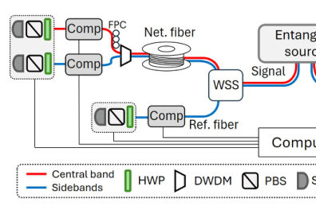
<figcaption class="paper-figure-caption"><b>Fig 3.</b> Fig. 3 Experimental setup for wavelength-bracketed and switch-enabled polarization stabilization. Wavelength-selective switches route the sidebands between the network (N) and local reference (R) fibres, while the central signal and idler channels remain in the network paths. The network fibre in the signal arm is 87 km and 46 km in the idler arm. Polarization compensation and projection modules perform feedback optimization and entanglement measurements. WSS: wave- length selective switch; Comp.: polarization compensation module; PBS: polarizing beam splitter; SPD: single photon detector; FPC: fibre polarization controller.</figcaption>
</figure>
<figure class="paper-figure-card">
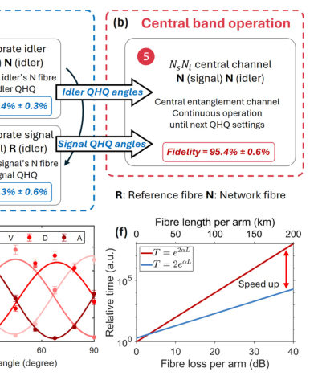
<figcaption class="paper-figure-caption"><b>Fig 4.</b> Fig. 4 Switch-enabled sideband calibration and transfer of QHQ settings to the cen- tral entanglement channel. (a) Sideband calibration sequence. In Step 1, the RsRi configuration establishes the local-reference baseline. In Step 2, RsNi calibrates the idler network arm while the signal arm remains in the reference configuration. In Step 3, NsRi calibrates the signal network arm while the idler arm remains in the reference configuration. For experimental verification, Step 4 applies the two independently determined QHQ settings simultaneously and evaluates them using an optional sideband NsNi measurement. (b) In Step 5, the QHQ angles obtained from the sideband RsNi and NsRi calibrations...</figcaption>
</figure>
<figure class="paper-figure-card">
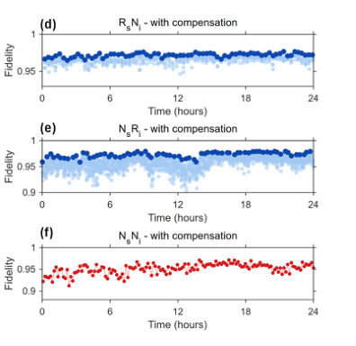
<figcaption class="paper-figure-caption"><b>Fig 5.</b> Fig. 5 Stable entanglement distribution over 24 hours. (a-c) Polarization-correlation fideli- ties measured without active compensation in the RsNi, NsRi, and NsNi configurations, respectively. The fidelity decreases as the polarization transformations of the network fibres drift with time. (d-f) Corresponding fidelity records with active compensation. The RsNi and NsRi measurements inde- pendently track the idler and signal network links, respectively, while the NsNi measurements record the stabilized central entanglement channel. In (d,e), the lighter points show intermediate measure- ments acquired during QHQ optimization, and the darker points show the accepted fidelities.</figcaption>
</figure>
</div>

<p><strong>Summary.</strong> This paper presents a novel technique to stabilize polarization entanglement in long-distance quantum fiber networks by combining wavelength-bracketed probing with optical switching. This approach overcomes the limitations of previous methods by eliminating downtime and changing the acquisition time scaling from the product to the sum of link losses. The method successfully demonstrates continuous, high-fidelity stabilization over extended periods.</p>
<p><strong>Why it may be interesting.</strong> This work directly addresses the engineering challenges of scaling quantum communication networks by providing a robust, noise-free, and time-efficient method for polarization stabilization, which is a critical component of quantum networking.</p>
<details>
<summary>Detailed structure</summary>
<p><strong>Main problem.</strong> Maintaining stable polarization basis is crucial for reliable, long-distance quantum networks distributing polarization entanglement.</p>
<p><strong>Main result.</strong> The proposed method achieves continuous closed-loop stabilization for over 24 hours without classical reference light, demonstrating a scalable strategy for multi-link quantum feedback.</p>
<p><strong>Method.</strong> The authors combine wavelength-bracketed probing with switch-enabled path decomposition to decouple the polarization stabilization measurement from the central quantum channel.</p>
<p><strong>Model / system.</strong> The system is a fibre-based quantum network distributing polarization entanglement in a Dense Wavelength-Division Multiplexing (DWDM) configuration, utilizing entangled-photon sidebands and optical switches.</p>
<p><strong>Key observables.</strong> Central channel entanglement fidelity (e.g., 95.1%), coincidence-to-accidental ratio (CAR), and the polarization transformation matrix (Stokes vector evolution).</p>
<p><strong>Important parameters / regimes.</strong> Link lengths (e.g., 133 km), loss rates ($\eta_s, \eta_i$), and the scaling of acquisition time (from product-of-losses to sum-of-losses).</p>
<p><strong>Assumptions / limitations.</strong> The local reference fibre loss is assumed negligible compared to the network fibre losses, and a first-order approximation is used for the wavelength-bracketing technique.</p>
<p><strong>Figures summary.</strong> Figures illustrate the spectral allocation of sidebands bracketing the central channel, the switching mechanism using WSS, and the continuous, stable evolution of the Stokes vectors over time.</p>
<p><strong>Paper structure.</strong> The paper first identifies the limitations of existing feedback methods (noise from classical light, slow acquisition time scaling). It then introduces the two-stage decoupling strategy: using sidebands for non-interruptive probing, and using switches to decompose the joint measurement into independent single-link measurements, culminating in experimental demonstration and fidelity measurements.</p>
</details>
<details>
<summary>Abstract</summary>
<p>Fibre-based quantum networks distributing polarization entanglement require a stable and uninterrupted transmission basis for reliable operation. Bright classical reference light enables rapid polarization feedback but can introduce noise into quantum channels. Entangled-photon-based feedback avoids this noise, but typically interrupts the target entanglement channel during calibration and becomes prohibitively slow over long distances due to the product loss of fibre links. Here, we overcome both limitations by combining wavelength-bracketed probing with switch-enabled path decomposition. Spectrally adjacent entangled-photon sidebands track the polarization response of the central distribution channel without interrupting its transmission, while optical switches and local reference fibres independently determine the signal and idler network transformations. Transferring the resulting compensation settings to the central channel eliminates calibration-induced downtime and changes the acquisition-time scaling from the product of the link losses to the sum of losses. We demonstrate the method on a 133 km fibre testbed and achieve continuous closed-loop stabilization for more than 24 hours without classical reference light. The decomposition of multi-link quantum feedback into single-link measurements provides a scalable stabilization strategy for wavelength-multiplexed quantum networks.</p>
</details>
<p><sub><a href="#top">↑ back to top</a></sub></p>

<p><a id="paper-2609.01927"></a></p>
<h3 id="microscopic-dynamics-of-contagion-using-active-brownian-particles-universal-scaling-and-propagation-controlled-by-protection"><a href="http://arxiv.org/abs/2609.01927v1">Microscopic dynamics of contagion using active Brownian particles: universal scaling and propagation controlled by protection</a></h3>
<p><strong>Authors:</strong> Isela Sicarú Regalado-Alvarado, Francisco Alarcón<br>
<strong>Type:</strong> theory · <strong>Category:</strong> statistical mechanics · <strong>PDF:</strong> <a href="https://arxiv.org/pdf/2609.01927v1">https://arxiv.org/pdf/2609.01927v1</a><br>
<strong>Analysis basis:</strong> full PDF text, analyzed in chunks
<strong>Topic relevance:</strong> 🔥 <code>non-equilibrium universality</code> <strong>4/5</strong> · <code>driven-dissipative phase transition</code> <strong>3/5</strong> · <code>Frenkel-Kontorova</code> <strong>1/5</strong> · <code>analog quantum simulation</code> <strong>1/5</strong> · <code>methods for driven-dissipative</code> <strong>1/5</strong></p>
<div class="figure-strip-hint">↔ Scroll figures horizontally</div>
<div class="paper-figures-scroll">
<figure class="paper-figure-card">
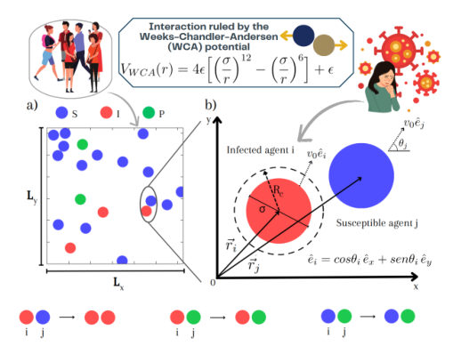
<figcaption class="paper-figure-caption"><b>Fig 1.</b> Figure 1: a) Sketch of the simulation box: N moving agents of diameter σ representing pedestrians. In a simulation box with periodic boundary conditions and the pair-interaction defined by the WCA potential. b) If an infected particle i is at a distance |ri −rj| ≤Rc of a susceptible agent j, it goes from susceptible to infected. The tree states: suscepti- ble S (blue), infected I (red) and protected P (green) such that S + I + P = N. Image inspired by [16].</figcaption>
</figure>
<figure class="paper-figure-card">
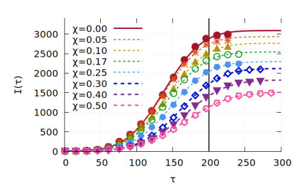
<figcaption class="paper-figure-caption"><b>Fig 2.</b> Figure 2: Plot of the contagion dynamics. The symbols rep- resent the agent-based simulations, with a mobility force FA = 50, ϕ = 0.056. On the x-axis the dimensionless time τ and the y-axis the number of infected agents I(τ). Each coloured curve represents a protected ratio χ. The continu- ous lines are the fitted erf functions. The Data availability section 5 leads to example clips from the results obtained of our simulations.</figcaption>
</figure>
<figure class="paper-figure-card">
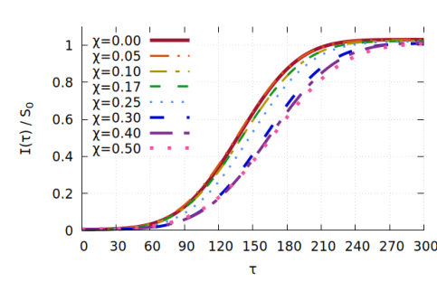
<figcaption class="paper-figure-caption"><b>Fig 3.</b> Figure 3: Normalised plot of the Contagion dynamics. The number of infected agents I(τ) divided by the initial num- ber of susceptible agents S0. On the x-axis the dimensionless time τ.</figcaption>
</figure>
<figure class="paper-figure-card">
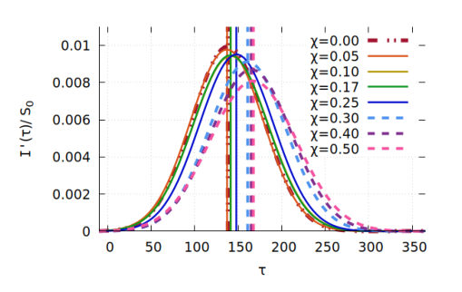
<figcaption class="paper-figure-caption"><b>Fig 4.</b> Figure 4: Normalised contagion rate as a function of time for different protected-agent fractions, χ. The corresponding values of τmax are indicated by the vertical lines and denote the time at which the contagion rate reaches its maximum value, νmax.</figcaption>
</figure>
<figure class="paper-figure-card">
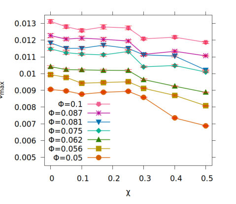
<figcaption class="paper-figure-caption"><b>Fig 5.</b> Figure 5: Maximum speed of contagion, νmax, as a func- tion of the protected-agent fraction, χ, for different packing fractions, ϕ. Different packing fractions are represented by coloured symbols connected by solid lines to guide the eye.</figcaption>
</figure>
</div>

<p><strong>Summary.</strong> This paper models disease spread using active matter particles to capture spatial effects missed by traditional epidemic models. It finds a critical protection threshold ($\approx 30\%$) that dictates whether contagion is governed by simple encounter frequency or by the protective mechanisms of the population. The work demonstrates the power of microscopic active-matter simulations for complex non-equilibrium dynamics.</p>
<p><strong>Why it may be interesting.</strong> While focused on epidemiology, the use of active matter models (ABPs) to study non-equilibrium collective dynamics, phase transitions (the crossover), and universal scaling laws in a spatially structured system is highly relevant to non-equilibrium statistical mechanics.</p>
<details>
<summary>Detailed structure</summary>
<p><strong>Main problem.</strong> The study investigates how individual protection levels and population density influence the dynamics of epidemic spreading, moving beyond the limitations of classical well-mixed models.</p>
<p><strong>Main result.</strong> The contagion dynamics exhibit two distinct regimes separated by a crossover protection level ($\approx 30\%$): below this, scaling is universal ($
u_{max} \propto \phi^{1/2}$), while above it, protection becomes the dominant control mechanism.</p>
<p><strong>Method.</strong> The research employs an agent-based simulation model using Active Brownian Particles (ABPs) to simulate the spatial spread of infection.</p>
<p><strong>Model / system.</strong> The system models contagion using ABPs (S, I, P) interacting via a WCA potential in a 2D domain. The dynamics are governed by Langevin equations in the overdamped limit.</p>
<p><strong>Key observables.</strong> Maximum contagion rate ($
u_{max}$), normalized contagion rate ($I'(    au)/S_0$), and the time to peak contagion ($   au_{max}$).</p>
<p><strong>Important parameters / regimes.</strong> Protected-agent fraction ($\chi$), population density (packing fraction $\phi$), and the crossover threshold ($\approx 0.3$).</p>
<p><strong>Assumptions / limitations.</strong> The analysis relies on the overdamped limit approximation and assumes interactions are governed by the WCA potential.</p>
<p><strong>Figures summary.</strong> Figures illustrate the time evolution of infected agents ($I(	au)$) and the normalized maximum contagion rate ($
u_{max}\phi^{-1/2}$) as a function of the protected fraction ($\chi$) for various densities ($\phi$), clearly showing the crossover.</p>
<p><strong>Paper structure.</strong> The paper progresses by first establishing the limitations of classical models, then detailing the ABP framework, and finally analyzing the scaling behavior of the contagion rate across different protection and density regimes.</p>
</details>
<details>
<summary>Abstract</summary>
<p>Understanding how individual protection and population density influence epidemic spreading remains a central challenge in epidemiology. While classical compartmental models successfully describe the temporal evolution of epidemics, they do not explicitly account for the microscopic motion and spatial organisation of individuals. Here, we investigate contagion dynamics using an agent-based model of Active Brownian Particles (ABPs), where self-propelled agents interact through local contact and a prescribed fraction of the population is protected. By systematically varying the protected-agent fraction and the population density, we identify two distinct contagion regimes separated by a crossover protection of approximately $30\%$. Below this threshold, the maximum contagion rate follows the universal scaling $ν_{\mathrm{max}}\proptoφ^{1/2}$, indicating that disease transmission is governed primarily by frequency of encounters. Above the threshold, universal scaling is lost and protection becomes the dominant mechanism controlling epidemic spreading, with the strongest suppression occurring in low-density populations. These results demonstrate that microscopic active-matter models provide a powerful framework for investigating epidemic dynamics beyond the assumptions of well-mixed population models and reveal how spatial organisation and individual protection jointly determine contagion dynamics.</p>
</details>
<p><sub><a href="#top">↑ back to top</a></sub></p>

<p><a id="paper-2609.02720"></a></p>
<h3 id="optimal-work-feedback-on-particles-with-activity-gliding-on-active-fluctuations-using-positional-information"><a href="http://arxiv.org/abs/2609.02720v1">Optimal-work feedback on particles with activity --- gliding on active fluctuations using positional information</a></h3>
<p><strong>Authors:</strong> Lars Torbjørn Stutzer, Sarah A. M. Loos<br>
<strong>Type:</strong> theory · <strong>Category:</strong> statistical mechanics · <strong>PDF:</strong> <a href="https://arxiv.org/pdf/2609.02720v1">https://arxiv.org/pdf/2609.02720v1</a><br>
<strong>Analysis basis:</strong> full PDF text, analyzed in chunks
<strong>Topic relevance:</strong> 🔥 <code>quantum measurements</code> <strong>4/5</strong> · <code>non-equilibrium universality</code> <strong>2/5</strong> · <code>Keldysh / 2PI / non-Gaussian methods</code> <strong>1/5</strong> · <code>correlated / nonlocal dissipation</code> <strong>1/5</strong> · <code>driven-dissipative phase transition</code> <strong>1/5</strong> · <code>methods for driven-dissipative</code> <strong>1/5</strong></p>
<div class="figure-strip-hint">↔ Scroll figures horizontally</div>
<div class="paper-figures-scroll">
<figure class="paper-figure-card">
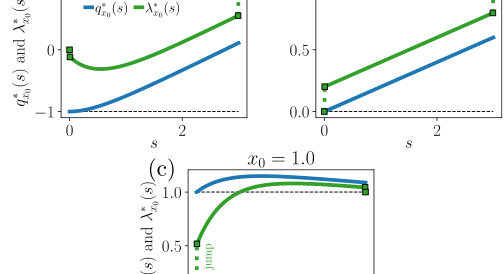
<figcaption class="paper-figure-caption"><b>Fig 1.</b> FIG. 1. Examples of optimal protocols (green) and particle trajectories (blue) [Eqs. (12)] for different initial values x0 (black dashed lines). The green dashed lines at the beginning and end of the protocol show the instantaneous jumps. Here, the parameters are set to λf = 1 (gray dashed lines), tf = 3, τ = 0.5, κ = 1, D = 1, and ω = 5.</figcaption>
</figure>
<figure class="paper-figure-card">
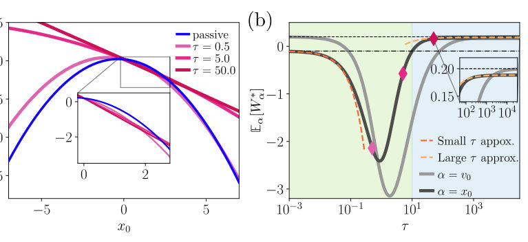
<figcaption class="paper-figure-caption"><b>Fig 2.</b> FIG. 2. Influence of τ on the optimal work. (a) Optimal work W ∗ x0 after positional measurement as a function of x0 for different values of τ. The inset shows a zoom-in on the region where an increase in τ lowers the required work needed to displace the trap. (b) Work after positional measurements (black) and after direct measurement of active fluctuations (gray) as functions of τ. Dashed plots show the asymptotic expansions for small τ [dashed orange, Eq. (22)] and large τ [dashed yellow, Eq. (25)]. The dash-dotted horizontal line shows the measurement-averaged work after positional measurements in the passive case, Epas x0 [W ∗ x0,pas], while the dashed horizontal line shows the...</figcaption>
</figure>
</div>

<p><strong>Summary.</strong> This paper analyzes the minimum work required to control particles immersed in active fluctuating environments. It demonstrates that positional information alone can be used to extract energy from the activity, a finding that surpasses previous requirements for direct measurement of the active noise. The results offer crucial design principles for controlling systems in non-equilibrium active matter.</p>
<p><strong>Why it may be interesting.</strong> The work provides general design principles for information engines and optimal control strategies operating in non-equilibrium active environments, which is relevant to understanding energy transduction in complex biological or synthetic active matter systems.</p>
<details>
<summary>Detailed structure</summary>
<p><strong>Main problem.</strong> The study focuses on determining the minimum work required for feedback control of particles subjected to active fluctuations, specifically investigating if work can be extracted using only positional measurements rather than direct measurements of the active degree of freedom.</p>
<p><strong>Main result.</strong> Positional feedback alone is sufficient to efficiently harvest work from activity due to non-trivial correlations, and this positional feedback remains energetically advantageous even in the limit of infinitely persistent activity.</p>
<p><strong>Method.</strong> The authors use optimal control theory to derive optimal protocols and calculate the average minimum work input required to move a harmonic trap minimum, comparing results from positional vs. active-fluctuation measurements.</p>
<p><strong>Model / system.</strong> The model involves an active Ornstein-Uhlenbeck particle (AOUP) confined by a moving harmonic trap. The dynamics are governed by overdamped Langevin equations incorporating active fluctuations that break detailed balance.</p>
<p><strong>Key observables.</strong> Average minimum work input ($\langle W_\alpha[\lambda] 
angle$), optimal feedback protocols ($\lambda^*(s)$), and the comparison of work extracted using positional vs. active-fluctuation information.</p>
<p><strong>Important parameters / regimes.</strong> Persistence time ($ au$), trap strength ($\kappa$), thermal diffusion ($\sigma$), and active fluctuation strength ($\sigma'$). The analysis examines limits like $  au  o 0$ and $  au  o \infty$.</p>
<p><strong>Assumptions / limitations.</strong> The analysis relies on the assumption that the joint stationary distribution is Gaussian. The comparison between different feedback schemes is central to the argument.</p>
<p><strong>Figures summary.</strong> Figure 2 compares the average optimal work ($  ext{Ex}_0[\dots]$) for positional feedback versus active-fluctuation feedback as a function of persistence time ($  au$), showing how the benefit of activity changes with $    au$.</p>
<p><strong>Paper structure.</strong> The paper establishes the physical model and control objective, derives the optimal protocols using variational methods, and then systematically compares the work extracted using positional information versus direct active fluctuation measurements, analyzing the asymptotic limits.</p>
</details>
<details>
<summary>Abstract</summary>
<p>We study the minimum-work feedback control of particles subject to active fluctuations. Considering an active Ornstein-Uhlenbeck particle confined by a moving harmonic trap, we derive exact optimal protocols following an initial position measurement. Our results show that nonequilibrium correlations between position and active fluctuations allow work extraction from the activity based on positional information only, i.e., without directly measuring the active degree of freedom, which was the focus of earlier literature. We find that depending on the persistence time, activity can either facilitate or impede transport relative to passive systems. Surprisingly, unlike feedback schemes based on direct measurements of the active fluctuations, positional feedback remains energetically advantageous even in the limit of infinitely persistent activity. Our results provide design principles for information engines and optimal control strategies operating in active environments.</p>
</details>
<p><sub><a href="#top">↑ back to top</a></sub></p>

<p><a id="paper-2609.02520"></a></p>
<h3 id="branching-stochastic-mechanics-ii-relative-localization-and-collective-poles-from-bohmfisher-feedback"><a href="http://arxiv.org/abs/2609.02520v1">Branching stochastic mechanics. II. Relative localization and collective poles from Bohm/Fisher feedback</a></h3>
<p><strong>Authors:</strong> Benoit Bischoff, Eric Dumonteil<br>
<strong>Type:</strong> theory · <strong>Category:</strong> statistical mechanics · <strong>PDF:</strong> <a href="https://arxiv.org/pdf/2609.02520v1">https://arxiv.org/pdf/2609.02520v1</a><br>
<strong>Analysis basis:</strong> full PDF text, analyzed in chunks
<strong>Topic relevance:</strong> 🔥 <code>Keldysh / 2PI / non-Gaussian methods</code> <strong>4/5</strong> · <code>correlated / nonlocal dissipation</code> <strong>1/5</strong> · <code>driven-dissipative phase transition</code> <strong>1/5</strong> · <code>methods for driven-dissipative</code> <strong>1/5</strong> · <code>non-equilibrium universality</code> <strong>1/5</strong> · <code>quantum measurements</code> <strong>1/5</strong></p>
<div class="figure-strip-hint">↔ Scroll figures horizontally</div>
<div class="paper-figures-scroll">
<figure class="paper-figure-card">

<figcaption class="paper-figure-caption"><b>Fig 1.</b> FIG. 2. Self-consistent 2PI corrections to the dressed relative kernel. On the left, the time-dependent local coefficients are sampled at the center of the localized relative spectrum, q = 0. The derivative coefficients are displayed through the finite- well spectral contributions E(0, T)k2 n and D(0, T)k4 n, while the crossed contribution is µ2P I(0, T). The Lorentzian width is retained separately as the characteristic spectral width ∆q ≡ξ−1. The crossed contribution develops with the sign selecting the localizing branch and dominates the infrared window. On the right, the full final-time momentum dependence displays the crossover from the non-derivative correction at low momentum to the...</figcaption>
</figure>
<figure class="paper-figure-card">

<figcaption class="paper-figure-caption"><b>Fig 2.</b> FIG. 3. Saturated non-contact cluster profile. The narrow contact contribution has been subtracted, leaving the resolved connected envelope Cnc UU(r, Rref); the dashed line shows an exponential fit ∝exp(−|r|/ξ).</figcaption>
</figure>
<figure class="paper-figure-card">

<figcaption class="paper-figure-caption"><b>Fig 3.</b> FIG. 4. Emergent Avrami kinetics from the reduced self-consistent 2PI evolution and comparison with the forward–backward BSM-MC reference. (a) Normalized local correlation masses extracted from the reduced self-consistent 2PI matrix evolution, shown for the contact-subtracted channels CUU −Cct UU and CW W −Cct W W . The pale curve is the forward–backward BSM-MC observable used in Paper I; its amplitude is normalized and its time axis is affinely aligned only for a qualitative comparison of kinetic shape. Black dashed curves are post-processing Avrami fits, C0 ii(T) = 1 −exp[−γi(T −Tsel,i)βi] . (b) Same data in the U-channel Avrami representation XU = −ln(1 −C0 UU) . The short-time mismatch...</figcaption>
</figure>
<figure class="paper-figure-card">

<figcaption class="paper-figure-caption"><b>Fig 4.</b> FIG. 5. Formation of the relative CUU(r, Rref, T) cluster. The surface shows the normalized connected contribution after re- moval of the initial/contact component. The inset displays the early extended mode and its fitted cosine profile before localization.</figcaption>
</figure>
<figure class="paper-figure-card">

<figcaption class="paper-figure-caption"><b>Fig 5.</b> FIG. 6. Fixed-internal-scale reconstruction of the massive sum branch. The left panel shows the time-dependent massive cor- rection µ2P I(0, T) used in this diagnostic, and the right panel shows the corresponding reconstructed massive-branch diagnostic Ω2 +(Q, T). The dashed curve marks the final quadratic fit Ω2 + = MKG + c2 fitQ2, where MKG is the fitted intercept in the paper’s Ω-normalization and c2 fit is the fitted Q2 curvature. This reconstruction is a diagnostic of the fixed-q family; the collective Born–Oppenheimer gap used for the final matching is defined after projection over the localized internal mode in Sec. VIII.</figcaption>
</figure>
</div>

<p><strong>Summary.</strong> This work develops a stochastic field theory for Branching Stochastic Mechanics incorporating Bohm/Fisher feedback. Using advanced techniques like the MSRJD formalism and 2PI closure, the authors analyze the system's connected fluctuations. They successfully characterize the emergent dynamics by separating it into relative localization and collective propagation modes, defining key saturation velocities and pole structures.</p>
<p><strong>Why it may be interesting.</strong> The use of advanced field-theoretic techniques (MSRJD, 2PI) to analyze non-equilibrium stochastic dynamics and emergent collective modes is highly relevant to understanding complex many-body systems.</p>
<details>
<summary>Detailed structure</summary>
<p><strong>Main problem.</strong> The paper develops a stochastic field theory to analyze the Bohm/Fisher feedback acting on the connected reciprocal sector derived from Branching Stochastic Mechanics (BSM).</p>
<p><strong>Main result.</strong> The theory successfully separates dynamics into relative localization and collective propagation, yielding two fixed-q pole families: a gapless difference branch and a gapped sum branch.</p>
<p><strong>Method.</strong> It employs the Martin-Siggia-Rose-Janssen-de Dominicis (MSRJD) formalism and a causal two-loop two-particle-irreducible (2PI) closure to self-consistently determine correlation and response functions.</p>
<p><strong>Model / system.</strong> The model is based on BSM, a stochastic extension of the Schrödinger–Nagasawa representation, focusing on the connected forward–backward kernel $C_{
m FB}$ and the associated BSM density $
ho_{
m BSM}$.</p>
<p><strong>Key observables.</strong> The saturated information velocity $c_\star$, the connected correlator matrix $C_{ij}$, and the two fixed-q pole families (gapless difference and gapped sum branches).</p>
<p><strong>Important parameters / regimes.</strong> The relative screening length, the saturation velocity $c_\star$, and the gap/pole structure in the frequency domain.</p>
<p><strong>Assumptions / limitations.</strong> The analysis relies on the results of Paper I, uses the MSRJD formalism, and involves approximations like neglecting crossed physical correlators in the reduced 2PI system.</p>
<p><strong>Figures summary.</strong> The notes mention comparisons between BSM-MC curves and $2	ext{PI}$ results, and diagnostic plots like the fixed-$q$ Klein–Gordon diagnostic ($M_{KG}$ vs $Q^2$).</p>
<p><strong>Paper structure.</strong> The paper builds upon Paper I, first establishing the stochastic field theory via MSRJD and 2PI closure. It then analyzes the reduced channels (density/phase) and separates the dynamics into relative (fast) and collective (slow) components, culminating in fixed-point matching conditions for the collective theory.</p>
</details>
<details>
<summary>Abstract</summary>
<p>Paper I introduced branching stochastic mechanics (BSM) by lifting the Schrödinger-Nagasawa pair to reciprocal forward and backward branching fields. Their centered connected kernel $C_{\rm FB}=\mathbb E_ω[ψ_Fψ_B]$ carries the organized reciprocal sector, where $\mathbb E_ω$ denotes expectation over branching-noise realizations, with $ρ_{\rm BSM}=-C_{\rm FB}(x,x)$ on the anticorrelated branch. Here we develop the stochastic field theory of the Bohm/Fisher feedback that acts on this connected sector. Starting from the multiplicative branching covariance of BSM, a Martin-Siggia-Rose-Janssen-de~Dominicis (MSRJD) formulation and a causal two-loop two-particle-irreducible (2PI) closure are used to determine response and correlation functions self-consistently. The free connected theory exhibits secular growth and ultraviolet accumulation, whereas the dressed theory develops a finite relative screening length. A reduced numerical evolution shows bounded formation of this localized sector, and a self-similar Fisher construction defines the saturated information velocity $c_\star$. A Born-Oppenheimer separation then distinguishes internal relative organization from collective propagation. Restoring the complete frequency structure gives two fixed-$q$ pole families: a gapless difference branch and a gapped sum branch. The infrared velocity of the difference branch approaches $c_\star$ at saturation. The common cone and the projected sum-sector gap are then formulated as additional fixed-point matching conditions for the collective theory.</p>
</details>
<p><sub><a href="#top">↑ back to top</a></sub></p>

<p><a id="paper-2609.02554"></a></p>
<h3 id="experimental-evaluation-of-passive-polarization-compensation-techniques-for-fiber-distributed-polarization-entangled-photons"><a href="http://arxiv.org/abs/2609.02554v1">Experimental Evaluation of Passive Polarization Compensation Techniques for Fiber-Distributed Polarization-Entangled Photons</a></h3>
<p><strong>Authors:</strong> Gayatri Thik, Amit Loyal, Srinivasan K, Raghavan G<br>
<strong>Type:</strong> experiment · <strong>Category:</strong> quantum information and computing · <strong>PDF:</strong> <a href="https://arxiv.org/pdf/2609.02554v1">https://arxiv.org/pdf/2609.02554v1</a><br>
<strong>Analysis basis:</strong> full PDF text, analyzed in chunks
<strong>Topic relevance:</strong> 🔥 <code>quantum optics experiment</code> <strong>4/5</strong> · <code>QC/QI experiment</code> <strong>3/5</strong> · <code>interference shaping light</code> <strong>1/5</strong></p>
<div class="figure-strip-hint">↔ Scroll figures horizontally</div>
<div class="paper-figures-scroll">
<figure class="paper-figure-card">

<figcaption class="paper-figure-caption"><b>Fig 1.</b> Fig. 1. Experimental configurations for the generation, fiber distribution, passive polarization compensation, and characterization of polarization-entangled photon pairs. (a) Polarization-entangled photon source (EPS) and polarization-analysis arrangement used for reference characterization before fiber distribution. (b) QHQ-based polarization- compensation configuration, in which a free-space QWP–HWP–QWP sequence is introduced after the fiber output in each photon path. (c) FPC-based polarization- compensation configuration, in which the signal and idler distribution fibers are independently controlled using three-paddle fiber polarization controllers. In (b) and (c), the common EPS and...</figcaption>
</figure>
<figure class="paper-figure-card">

<figcaption class="paper-figure-caption"><b>Fig 2.</b> Fig. 2. Reference characterization of the polarization-entangled photon source before fiber distribution. (a) Measured polarization correlations of the generated |Φ+⟩state in the 𝐻/𝑉and 𝐷/𝐴measurement bases. (b) Reconstructed two-qubit density matrix obtained from quantum-state tomography.</figcaption>
</figure>
<figure class="paper-figure-card">

<figcaption class="paper-figure-caption"><b>Fig 3.</b> Fig. 3. Polarization-correlation and quantum-state-tomography results before and after QHQ-based polarization compensation. (a) Polarization correlations before compensation. (b) Polarization correlations after path-by-path QHQ optimization. (c) Reconstructed density matrix before compensation. (d) Reconstructed density matrix after compensation, showing recovery of a state close to |Φ+⟩.</figcaption>
</figure>
<figure class="paper-figure-card">

<figcaption class="paper-figure-caption"><b>Fig 4.</b> Fig. 4. Polarization-correlation and quantum-state-tomography results before and after FPC-based polarization compensation. (a) Polarization correlations before compensation. (b) Polarization correlations after path-by-path FPC optimization. (c) Reconstructed density matrix before compensation. (d) Reconstructed density matrix after compensation, showing recovery of a state close to |Φ+⟩.</figcaption>
</figure>
</div>

<p><strong>Summary.</strong> This paper experimentally evaluates two passive methods—free-space waveplates and fiber polarization controllers—to compensate for polarization degradation in entangled photons traveling through optical fibers. By optimizing each path independently, the authors successfully restored high-quality entanglement, demonstrating that both free-space and fiber-based control methods are equally effective for short-reach quantum links.</p>
<p><strong>Why it may be interesting.</strong> This work provides a crucial experimental validation of systematic, passive compensation techniques necessary for building reliable quantum communication links over optical fibers, directly impacting photonic quantum information networks.</p>
<details>
<summary>Detailed structure</summary>
<p><strong>Main problem.</strong> Fiber transmission degrades the polarization correlations of entangled photons, necessitating polarization compensation to restore the desired entangled state for quantum communication.</p>
<p><strong>Main result.</strong> Both free-space (QHQ) and fiber-based (FPC) passive compensation techniques successfully restore high-quality polarization correlations and entanglement, achieving fidelities above 94.5%.</p>
<p><strong>Method.</strong> The authors experimentally evaluated two passive compensation methods—QHQ waveplates and FPC—using an independent, path-by-path optimization procedure on the signal and idler paths.</p>
<p><strong>Model / system.</strong> The system involves distributing polarization-entangled photons through single-mode optical fibers. The polarization transformation is modeled as a unitary operation, and compensation aims to apply the inverse unitary transformation.</p>
<p><strong>Key observables.</strong> Polarization correlations, Bell–CHSH parameter, Visibility (exceeding 93%), and State Fidelity (above 94.5%).</p>
<p><strong>Important parameters / regimes.</strong> The comparison is between QHQ (free-space) and FPC (fiber-based) compensation methods for short-reach links.</p>
<p><strong>Assumptions / limitations.</strong> The compensation is implemented using passive elements, and the optimization procedure is performed path-by-path before final state characterization.</p>
<p><strong>Figures summary.</strong> Figures illustrate the experimental setups for both QHQ and FPC compensation, and show the measured polarization correlations and reconstructed two-qubit density matrices before and after compensation.</p>
<p><strong>Paper structure.</strong> The paper first establishes the problem of fiber-induced polarization degradation, then details the two compensation methods (QHQ and FPC), describes the systematic path-by-path optimization procedure, and finally presents quantitative comparisons of the recovered entanglement quality.</p>
</details>
<details>
<summary>Abstract</summary>
<p>Entanglement distribution through optical fibers is essential for quantum communication networks; however, fiber transmission can alter photon polarization and modify the observed correlations of polarization-entangled states, necessitating polarization compensation to recover the desired entangled state in the measurement basis. Here, we experimentally evaluate two passive polarization compensation techniques: a free-space Quarter-Half-Quarter (QHQ) waveplate configuration and an in-fiber three-paddle Fiber Polarization Controller (FPC). The polarization transformation along each downconverted-photon path is independently compensated through a systematic path-by-path optimization procedure. Using both techniques, we recover high-quality polarization correlations and entanglement, with visibilities exceeding $93\%$ in three mutually unbiased bases and fidelities above $94.5\%$. The results demonstrate comparable restoration using free-space waveplate-based and fiber-based control, establishing a systematic framework for laboratory and short-reach quantum communication links.</p>
</details>
<p><sub><a href="#top">↑ back to top</a></sub></p>

<p><a id="paper-2609.02579"></a></p>
<h3 id="long-lived-telecom-heralded-single-photon-storage-in-an-absorptive-spin-rephased-quantum-memory"><a href="http://arxiv.org/abs/2609.02579v1">Long-lived telecom-heralded single-photon storage in an absorptive spin-rephased quantum memory</a></h3>
<p><strong>Authors:</strong> Alberto E. Rodríguez-Moldes, Félicien Appas, Jonathan Hänni, Jelena V. Rakonjac, Samuele Grandi, Hugues de Riedmatten<br>
<strong>Type:</strong> experiment · <strong>Category:</strong> quantum information and computing · <strong>PDF:</strong> <a href="https://arxiv.org/pdf/2609.02579v1">https://arxiv.org/pdf/2609.02579v1</a><br>
<strong>Analysis basis:</strong> full PDF text, analyzed in chunks
<strong>Topic relevance:</strong> 🔥 <code>QC/QI experiment</code> <strong>4/5</strong> · <code>quantum optics experiment</code> <strong>3/5</strong> · <code>quantum measurements</code> <strong>1/5</strong></p>
<div class="figure-strip-hint">↔ Scroll figures horizontally</div>
<div class="paper-figures-scroll">
<figure class="paper-figure-card">

<figcaption class="paper-figure-caption"><b>Fig 1.</b> FIG. 1. (a) Experimental setup. In single photon storage experiments, a second Pr3+:Y2SiO5 crystal is used for spectral filtering before detection (not shown). ppLN, periodically poled lithium niobate; FC, filter cavity; BPF, bandpass filter; SPD, single photon detector; Et., etalon; Prep., preparation beam; CP, control pulses beam; Coax, coaxial cable. (b) Energy levels for the 3H4(0) ↔1 D2(0) transition of Pr3+:Y2SiO5 showing the optical and hyperfine transitions used in the spin-wave AFC storage protocol. (c) Storage efficiency for classical light as a function of total storage time. Black dots: without rf rephasing pulses. Color symbols: single XX, XY4 or XY16 pulse sequence. Black...</figcaption>
</figure>
<figure class="paper-figure-card">

<figcaption class="paper-figure-caption"><b>Fig 2.</b> FIG. 2. (a) Heralded autocorrelation of signal photons without storage. The signal mode goes through a broad transparency window prepared in both the QM and the filter crystal. (b) Time-correlation histogram between the detection of idler and signal photons after storage in the QM with a single XY4 sequence for 100.9 µs. The temporal envelope of the rf pulses is depicted in light pink. The inset shows a zoom on the region of the photon echo. Bin size: 20 ns</figcaption>
</figure>
<figure class="paper-figure-card">

<figcaption class="paper-figure-caption"><b>Fig 3.</b> FIG. 3. Long-lived storage of heralded single photons with a XY4 sequence. (a) Signal-idler cross correlation g(2) si , (b) extrapolated output autocorrelation g(2) out (c) and storage ef- ficiency and noise floor as a function of total storage time. The noise floor here is defined as the probability per herald of detecting a noise photon backpropagated to after the QM.</figcaption>
</figure>
</div>

<p><strong>Summary.</strong> This paper reports the successful demonstration of storing single photons in a Pr3+:Y2SiO5 quantum memory using a sophisticated AFC spin-wave protocol combined with spin rephasing. By achieving non-classical correlations for storage times up to 180 us, the research provides a significant step toward realizing scalable quantum repeater links for long-distance quantum communication.</p>
<p><strong>Why it may be interesting.</strong> This work directly addresses the hardware requirements for quantum networking by demonstrating robust, long-lived quantum memory storage using solid-state systems, a major focus area for quantum information scientists.</p>
<details>
<summary>Detailed structure</summary>
<p><strong>Main problem.</strong> The central challenge is achieving long-lived storage of single photons in an absorptive quantum memory that incorporates spin rephasing mechanisms, which is crucial for building long-distance quantum networks.</p>
<p><strong>Main result.</strong> The authors successfully demonstrated non-classical storage of telecom-heralded single photons in a Pr3+:Y2SiO5 quantum memory, achieving storage times up to 180 us with measurable quantum correlations.</p>
<p><strong>Method.</strong> The experiment utilizes the Atomic Frequency Comb (AFC) spin-wave protocol combined with advanced spin rephasing sequences (like XY4) to mitigate decoherence in the rare-earth ion doped crystal.</p>
<p><strong>Model / system.</strong> The physical platform is a Pr3+:Y2SiO5 rare-earth ion doped crystal quantum memory. The storage mechanism relies on coupling photonic information to the long-lived spin excitations of the Pr3+ ions, which are manipulated using microwave pulses.</p>
<p><strong>Key observables.</strong> Non-classical correlations between heralding and stored signal photons (e.g., cross-correlation values up to 4.6(4)), and the decay of AFC photon echoes.</p>
<p><strong>Important parameters / regimes.</strong> Storage times ranging from 3 ms (classical) to 180 us (heralded single photons); the use of telecom-band photons and the AFC spin-wave protocol.</p>
<p><strong>Assumptions / limitations.</strong> The coherence time is limited by spin dephasing, which is mitigated by the applied spin rephasing pulses; the system's scalability is supported by the crystal's ability to support multiplexed storage.</p>
<p><strong>Figures summary.</strong> Figures illustrate the experimental setup, energy level diagrams, and crucially, show the measured non-classical correlations (e.g., time-correlation histograms) confirming single-photon storage fidelity over time.</p>
<p><strong>Paper structure.</strong> The paper progresses by first establishing classical echo measurements, then demonstrating the use of heralded single photons, and finally quantifying the non-classical nature of the stored quantum state using correlation measurements.</p>
</details>
<details>
<summary>Abstract</summary>
<p>Long-lived storage of single photons under the form of atomic excitations is at the foundation of long-distance entanglement distribution in quantum networks. To mitigate decoherence effects induced by the environment, rephasing of the hyperfine coherences using microwave pulses have been implemented in a variety of single-emitter and ensemble-based solid-state systems. However, the demonstration of storage of single photons in an absorptive quantum memory including such spin rephasing mechanism remains elusive. In this work, we show non-classical storage of telecom-heralded single photons in a Pr$^{3+}$:Y$_2$SiO$_5$ rare-earth ion doped crystal quantum memory using the atomic frequency comb (AFC) spin-wave protocol combined with a XY4 spin rephasing sequence. Long-lived AFC photon echoes are first observed in the classical regime for storage times of up to approximately 3 ms. We then demonstrate non-classical correlations between heralding photons and stored signal photons generated by a cavity-enhanced parametric photon-pair source for storage times of up to 180 $μ$s and with measured cross-correlation values as high as 4.6(4). Together with the capacity of Pr$^{3+}$:Y$_2$SiO$_5$ QMs to support highly efficient and multiplexed storage, this result represents a significant step towards scalable long-distance quantum repeater links.</p>
</details>
<p><sub><a href="#top">↑ back to top</a></sub></p>

<p><a id="paper-2609.02458"></a></p>
<h3 id="impedance-in-periodically-driven-stochastic-systems"><a href="http://arxiv.org/abs/2609.02458v1">Impedance in Periodically Driven Stochastic Systems</a></h3>
<p><strong>Authors:</strong> Bart Wijns, Branko Meeus, Jef Hooyberghs, Bart Cleuren<br>
<strong>Type:</strong> theory · <strong>Category:</strong> statistical mechanics · <strong>PDF:</strong> <a href="https://arxiv.org/pdf/2609.02458v1">https://arxiv.org/pdf/2609.02458v1</a><br>
<strong>Analysis basis:</strong> full PDF text, analyzed in chunks
<strong>Topic relevance:</strong> <code>Keldysh / 2PI / non-Gaussian methods</code> <strong>3/5</strong> · <code>driven-dissipative phase transition</code> <strong>3/5</strong> · <code>methods for driven-dissipative</code> <strong>3/5</strong> · <code>non-equilibrium universality</code> <strong>3/5</strong> · <code>analog quantum simulation</code> <strong>2/5</strong> · <code>correlated / nonlocal dissipation</code> <strong>2/5</strong> · <code>Frenkel-Kontorova</code> <strong>1/5</strong> · <code>quantum measurements</code> <strong>1/5</strong> · <code>scars &amp; prethermalization</code> <strong>1/5</strong></p>
<div class="figure-strip-hint">↔ Scroll figures horizontally</div>
<div class="paper-figures-scroll">
<figure class="paper-figure-card">

<figcaption class="paper-figure-caption"><b>Fig 1.</b> FIG. 1. (a) Diagram of the N states of the stochastic system. The solid lines represent transitions between states. (b) The equivalent electrical circuit whose impedance has the same form as (16). The indices mn on the coefficients A(k) mn have been dropped for notational simplicity. The dotted lines rep- resent multiple branches whose structure is identical to the drawn branches.</figcaption>
</figure>
<figure class="paper-figure-card">

<figcaption class="paper-figure-caption"><b>Fig 2.</b> FIG. 2. The conductivities σmn for all the possible transitions in a linear chain of three sites as a function of the driving frequency ω, normalized by the adiabatic conductivity σ(0) (the subscripts have been dropped as σ(0) is the same for all transitions). The driving acts only on the transition to the left reservoir. The arrows on the curves indicate the direction of increasing frequency. The transitions shown in the inset are colored according to their conductivity curves. Note that the subscripts of σ(0) have been dropped as they are the same for all transitions.</figcaption>
</figure>
<figure class="paper-figure-card">

<figcaption class="paper-figure-caption"><b>Fig 3.</b> FIG. 3. (a) The size of the conductivity plot as a function of relative position n/N along the chain for different chain lengths N. The conductivity for the transition n →n + 1 (or N →R if n = N) is denoted by σn. The conductivity σ0 for the transition with the left reservoir isn’t shown because, being a driven transition, its size is more determined by its high-frequency limit than by its shape. (b) The size of the conductivity plot for the current between the system and the undriven reservoir, as a function of the chain length N, for an ideal system and two disordered sys- tems in which the energy was sampled from normal distribu- tions with standard deviations (sd) of 0.5 and 1.</figcaption>
</figure>
<figure class="paper-figure-card">

<figcaption class="paper-figure-caption"><b>Fig 4.</b> FIG. 4. (a) The stationary current J21 as a function of the ap- plied constant driving F outside the linear regime for both the system with and without a shortcut. (b) The conductivities for the periodic chain with a shortcut (indicated by the arrow between states 1 and 3 in the inset on (a)). Arrows in the inset indicate the direction of the driving at zero frequency, where the current is considered positive. The arrows on the curves indicate the direction of increasing frequency. Currents with the same color on the inset are identical by symmetry. The dot represents the system’s conductivity without a shortcut.</figcaption>
</figure>
</div>

<p><strong>Summary.</strong> This work develops a powerful diagnostic tool—the frequency-dependent impedance—to characterize periodically driven stochastic systems. By mapping the system dynamics onto an equivalent electrical circuit, the authors show that measuring this impedance can reveal subtle underlying structural details, such as broken symmetries or the presence of specific coupling mechanisms.</p>
<p><strong>Why it may be interesting.</strong> The strong connection between non-equilibrium statistical mechanics (stochastic processes) and electrical circuit theory provides powerful, measurable diagnostics for understanding open quantum systems dynamics.</p>
<details>
<summary>Detailed structure</summary>
<p><strong>Main problem.</strong> The paper studies the time-dependent currents and associated impedance in periodically driven stochastic systems.</p>
<p><strong>Main result.</strong> It derives a closed-form expression for the impedance, showing it can be interpreted as the parallel combination of $N$ components, and demonstrates its use to detect broken symmetries in the system dynamics.</p>
<p><strong>Method.</strong> The analysis employs linear response theory, utilizing the structure of the master equation and performing complex frequency-domain analysis (impedance/admittance).</p>
<p><strong>Model / system.</strong> The model is a general stochastic system with $N$ discrete states governed by a time-dependent master equation. Specific applications include linear hopping chains with reservoirs.</p>
<p><strong>Key observables.</strong> Conductivity $\sigma_{mn}(\omega)$ and impedance $Z_{mn}(\omega)$ as complex functions of frequency $\omega$.</p>
<p><strong>Important parameters / regimes.</strong> Driving frequency $\omega$, system size $N$, and the structure of the transition rates $W(t)$.</p>
<p><strong>Assumptions / limitations.</strong> The analysis is restricted to the linear response regime (small driving).</p>
<p><strong>Figures summary.</strong> Figures illustrate the equivalent electrical circuit analogy, the frequency dependence of conductivity ($\sigma_{mn}$ vs. $\omega$), and how conductivity measurements can reveal structural differences, such as the presence of a shortcut.</p>
<p><strong>Paper structure.</strong> The paper builds from deriving the general impedance formula in the linear regime, interpreting it via an electrical circuit analogy, analyzing low and high-frequency limits, and finally applying the diagnostic tool to distinguish between different microscopic system structures (e.g., with vs. without a shortcut).</p>
</details>
<details>
<summary>Abstract</summary>
<p>We study the time-dependent currents arising in periodically driven stochastic systems. In the linear regime of small driving, a closed expression is obtained for the impedance/admittance associated with these currents. This expression leads directly to an interpretation in terms of an equivalent electrical circuit. For a stochastic system with $N$ states, the electrical circuit consists of precisely $N$ parallel branches, with each branch comprising a resistor and a capacitor in series. The low- and high-frequency limits of these currents are calculated, and the results are generalized to more general current expressions. We demonstrate our findings across several archetypal settings, illustrating the potential to detect specific broken symmetries or the graph topology associated with the stochastic process.</p>
</details>
<p><sub><a href="#top">↑ back to top</a></sub></p>

<p><a id="paper-2609.02589"></a></p>
<h3 id="exceptional-topological-signatures-of-non-hermitian-photonic-hopf-link-braids"><a href="http://arxiv.org/abs/2609.02589v1">Exceptional Topological Signatures of Non-Hermitian Photonic Hopf-Link Braids</a></h3>
<p><strong>Authors:</strong> Samit Kumar Gupta<br>
<strong>Type:</strong> theory · <strong>Category:</strong> other · <strong>PDF:</strong> <a href="https://arxiv.org/pdf/2609.02589v1">https://arxiv.org/pdf/2609.02589v1</a><br>
<strong>Analysis basis:</strong> full PDF text, analyzed in chunks
<strong>Topic relevance:</strong> <code>analog quantum simulation</code> <strong>3/5</strong> · <code>correlated / nonlocal dissipation</code> <strong>3/5</strong> · <code>driven-dissipative phase transition</code> <strong>3/5</strong> · <code>methods for driven-dissipative</code> <strong>2/5</strong> · <code>non-equilibrium universality</code> <strong>2/5</strong> · <code>Keldysh / 2PI / non-Gaussian methods</code> <strong>1/5</strong></p>
<div class="figure-strip-hint">↔ Scroll figures horizontally</div>
<div class="paper-figures-scroll">
<figure class="paper-figure-card">

<figcaption class="paper-figure-caption"><b>Fig 1.</b> FIG. 1. Schematic diagram of the system based on the 1D Hatano-Nelson model. The solid black lines represent right- ward NN hoppings whereas dashed black lines represent left- ward NN hoppings. The solid yellow lines represent right- ward NNN hoppings whereas dashed yellow lines represent left-ward NNN hoppings. The solid blue lines represent right- ward NN hoppings whereas dashed blue lines represent left- ward NN hoppings. The red and blue disks represent gain and loss sites respectively with a unit cell represented by a rectangular box at the center.</figcaption>
</figure>
<figure class="paper-figure-card">

<figcaption class="paper-figure-caption"><b>Fig 2.</b> FIG. 2. Braiding index in the JNNNN L −JNNNN R plane (a) and the evolution trajectories of the particle in the complex plane Re(E)−Im(E) (b,c,d,e) where E = EP BC = E± ∈C as in Eq. 5 as the quasimomentum k is varied between −π and +π. Here, for (b) P1 = (JNNNN L , JNNNN R ) = (4.0, 1.0), (c)P2 = (JNNNN L , JNNNN R ) = (1.0, 4.0), (d) P3 = (JNNNN L , JNNNN R ) = (0.3, 0.3), (e) P4 = (JNNNN L , JNNNN R ) = (3.0, 3.0). The faded red and blue arrows in the k = −π plane denote the handedness of the spectral topology of the bands in (b-e). The braiding index in the θNNNN L −θNNNN R plane for the four points (Pj, j = 1, 2, 3, 4) as indicated in Fig. 2(b-e): (f) (JNNNN L , JNNNN R ) = (4.0, 1.0),...</figcaption>
</figure>
<figure class="paper-figure-card">

<figcaption class="paper-figure-caption"><b>Fig 3.</b> FIG. 3. Riemann sheet topology of the eigenvalues and exceptional phase boundaries: (a) Re(E±) and Im(E±) in the k/π −γ plane; (b) log10Kn plotted in the k−γ plane; (c-f) log10Kn in the (θNNNN L −θNNNN R ) plane by varying γ: (c) γ = 0.4, (d) γ = 0.6, (e) γ = γEP = 0.7325, (f) γ = 0.95. Other parameters: JNN L = JNN R = 1.0, JNNN L = JNNN R = 0.8, JNNNN L = JNNNN R = 0.6, θNN L = θNN R = θNNN L = θNNN R = 0.0. For (a) and (b) θNNNN L = JNNNN R = −2.1.</figcaption>
</figure>
</div>

<p><strong>Summary.</strong> This work explores the complex topological structure of non-Hermitian systems using a generalized Hatano-Nelson model. By introducing multiple competing non-Hermiticity sources, the authors demonstrate the existence of high-order Hopf-link braids and EP-mediated topological phase transitions. These findings suggest potential applications for building robust quantum communication channels and quantum computing platforms.</p>
<p><strong>Why it may be interesting.</strong> The study connects non-Hermitian physics, topological invariants (Hopf-link braids), and engineered gain/loss mechanisms, providing a framework for designing robust quantum systems.</p>
<details>
<summary>Detailed structure</summary>
<p><strong>Main problem.</strong> The paper investigates the exceptional topological signatures of Hopf-link braids in non-Hermitian systems, focusing on how competing sources of non-Hermiticity influence the topology.</p>
<p><strong>Main result.</strong> The system exhibits higher-order Hopf-link braiding ($
u = \pm 6$) and undergoes EP-mediated topological phase transitions, which can be controlled by gain-loss non-Hermiticity.</p>
<p><strong>Method.</strong> The analysis employs biorthogonal eigenvector tracking and uses the maximum Petermann factor divergence as a diagnostic tool to map the structural evolution of exceptional phase boundaries.</p>
<p><strong>Model / system.</strong> The model is a generalized Hatano-Nelson type tight-binding lattice Hamiltonian incorporating higher-order nonreciprocal hoppings, non-Abelian gauge fields, and staggered gain-loss processes.</p>
<p><strong>Key observables.</strong> Exceptional Points (EPs), topological winding/braiding degree ($
u$), and the Petermann factor ($K_n$).</p>
<p><strong>Important parameters / regimes.</strong> Gain/loss parameter ($\gamma$), non-Abelian gauge phases ($  heta$), and hopping strengths ($J$).</p>
<p><strong>Assumptions / limitations.</strong> The general case is analytically intractable, necessitating simplifications to access EPs; the analysis assumes periodic boundary conditions (PBC).</p>
<p><strong>Figures summary.</strong> Figures illustrate the braiding indices ($
u$) for NNNN interactions, showing $
u=0, \pm 6$ regimes, and map the spectral evolution in the complex plane.</p>
<p><strong>Paper structure.</strong> The paper develops the Hamiltonian, analyzes the topological invariants ($
u$), tracks the phase boundaries using the Petermann factor, and discusses the physical implications of the EP-mediated transitions.</p>
</details>
<details>
<summary>Abstract</summary>
<p>Non-Hermitian physics endows the non-Abelian systems with exceptional topology characterized by non-commutative braid patterns. Interplay of distinct competing sources of non-Hermiticity may induce novel topological effects. Here, we provide a generalized Hatano-Nelson model with higher-order nonreciprocal hoppings, non-Abelian gauge fields, and staggered gain-loss processes showing the exceptional topological structure of the Hopf-link braids that undergoes a EP-mediated topological phase transition. We demonstrate that mixing multiple nonreciprocal channels drives the system into highly intricate, nested complex energy Hopf-link braids and expands the topological landscape up to higher-order braiding sectors. Furthermore, utilizing biorthogonal eigenvector tracking, we map the structural evolution of the exceptional phase boundaries via the maximum Petermann factor in the phase angle parameter planes. We show that the gain-loss non-Hermiticity drives a topological crossover where the extended exceptional contours constrict into isolated regimes. The demonstration of EP-mediated topological phase transition of Hopf-link braids and the associated rich exceptional phase portraits may offer new physical insights with promising applications in robust, fault-tolerant communication channels and quantum computing platforms.</p>
</details>
<p><sub><a href="#top">↑ back to top</a></sub></p>

<p><a id="paper-2609.02593"></a></p>
<h3 id="the-advantages-of-extended-nonreciprocal-quantum-batteries"><a href="http://arxiv.org/abs/2609.02593v1">The advantages of extended nonreciprocal quantum batteries</a></h3>
<p><strong>Authors:</strong> Meng-Long Song, Zan Cao, Hai-Tao Dong, Si-Yu Zhang, Xue-Ke Song, Liu Ye, Dong Wang<br>
<strong>Type:</strong> theory · <strong>Category:</strong> other · <strong>PDF:</strong> <a href="https://arxiv.org/pdf/2609.02593v1">https://arxiv.org/pdf/2609.02593v1</a><br>
<strong>Analysis basis:</strong> full PDF text, analyzed in chunks
<strong>Topic relevance:</strong> <code>correlated / nonlocal dissipation</code> <strong>3/5</strong> · <code>driven-dissipative phase transition</code> <strong>3/5</strong> · <code>methods for driven-dissipative</code> <strong>3/5</strong> · <code>Keldysh / 2PI / non-Gaussian methods</code> <strong>1/5</strong> · <code>Tavis-Cummings &amp; cavity-many-emitter</code> <strong>1/5</strong> · <code>analog quantum simulation</code> <strong>1/5</strong> · <code>non-equilibrium universality</code> <strong>1/5</strong> · <code>quantum measurements</code> <strong>1/5</strong></p>
<div class="figure-strip-hint">↔ Scroll figures horizontally</div>
<div class="paper-figures-scroll">
<figure class="paper-figure-card">

<figcaption class="paper-figure-caption"><b>Fig 1.</b> FIG. 1. Extended nonreciprocal QB: The subsystems are connected through coherent coupling Jij, ij = {ab, ac, bc} are connected to the shared reservoir (R) at a rate Γ, and dissipate independently at a rate κi, i = {a, b, c}; external pumps (ωL, εi) drive the charger. The single-threaded chain structure only drives the remote charger, and the battery connects to the terminal charger; the multi-threaded star structure simultaneously drives all chargers and provides inde- pendent power supply.</figcaption>
</figure>
<figure class="paper-figure-card">

<figcaption class="paper-figure-caption"><b>Fig 2.</b> FIG. 2. For single-threaded scenario: The stored energy Es c (unit ωc) and charging power P s c = Es c/t are plotted as a function of time in (A-D, a-d). Here εa = 0.2, Jab = κ = 0.003, Γ = 0.04, pb = pc = 1 and Jbc = iΓp∗ bpc/2.</figcaption>
</figure>
<figure class="paper-figure-card">

<figcaption class="paper-figure-caption"><b>Fig 3.</b> FIG. 4. The maximum steady-state stored energy (Es c,max and Em c,max) are plotted as a function of the dissipation ratio κ/Γ. (a) single-threaded charging, (b) multi-threaded charging. The orange line to original nonreciprocal charging [58].</figcaption>
</figure>
<figure class="paper-figure-card">

<figcaption class="paper-figure-caption"><b>Fig 4.</b> FIG. 5. The energy ratio η and gain as functions of the dissipation ratio κ/Γ are plotted . The black dashed line η = 1 in (a) represents the energy stored equals the charger’s average energy; a higher η above it suggest lower-cost charging.</figcaption>
</figure>
<figure class="paper-figure-card">

<figcaption class="paper-figure-caption"><b>Fig 5.</b> Fig. 4(a) shows a clear advantage of nonreciprocal charging energy storage: the single-thread charging can achieve infinite energy storage (Es,nr c,max →∞) in a weak local environment or under effective isolation (κ ≪Γ led to x →0); although the original scheme cannot achieve infinite energy storage, its induced capacity is still significantly superior to that of re- ciprocal charging Es,r c,max. Fig. 4(b) compares multi-thread charging with the original nonreciprocal charging: in a weak local environment (κ ≪Γ), reciprocal charging can achieve infinite energy storage (Em,r c,max →∞); when the coherent effect disappears (J = 0), multi-thread reciprocal charging is actually dissipative...</figcaption>
</figure>
</div>

<p><strong>Summary.</strong> This paper analyzes extended nonreciprocal quantum batteries to optimize energy storage and transfer. It demonstrates that nonreciprocal charging protocols significantly outperform reciprocal methods by achieving higher energy storage and transfer efficiency. The findings provide a theoretical framework for implementing superior, robust charging mechanisms in quantum energy systems.</p>
<p><strong>Why it may be interesting.</strong> This work directly addresses open quantum systems dynamics, specifically focusing on engineered nonreciprocal couplings to enhance energy storage and transfer, which is highly relevant to quantum optics and quantum energy harvesting.</p>
<details>
<summary>Detailed structure</summary>
<p><strong>Main problem.</strong> The study investigates the performance and inherent advantages of extended nonreciprocal quantum batteries (QBs) for energy storage and energy transfer compared to standard reciprocal and original nonreciprocal charging protocols.</p>
<p><strong>Main result.</strong> Extended nonreciprocal charging protocols demonstrate superior energy transfer capabilities and achieve high steady-state energy storage, particularly in multi-threaded configurations, which are unmatched by reciprocal charging.</p>
<p><strong>Method.</strong> The analysis uses the Lindblad quantum master equation to model system dynamics and derives maximum steady-state energy and energy transfer ratios by comparing different charging topologies.</p>
<p><strong>Model / system.</strong> The model involves an extended nonreciprocal QB system comprising chargers and a battery, described by Hamiltonians for single-threaded and multi-threaded couplings. The dynamics are governed by the Lindblad master equation.</p>
<p><strong>Key observables.</strong> Stored energy ($E_{s,c}, E_{m,c}$), charging power ($P_{s,c}, P_{m,c}$), energy ratio ($\eta$), and gain function ($G$).</p>
<p><strong>Important parameters / regimes.</strong> Detuning ($\Delta_i$) between the charging system and the external pump, and the dissipation ratio ($\kappa/\Gamma$).</p>
<p><strong>Assumptions / limitations.</strong> The analysis compares the extended nonreciprocal scheme against reciprocal and original nonreciprocal protocols, assuming the system can reach steady-state energy limits.</p>
<p><strong>Figures summary.</strong> Figures illustrate the schematic structure of the QB, show time evolution of stored energy and power for different charging flows, and plot energy ratios and gains comparing various charging protocols.</p>
<p><strong>Paper structure.</strong> The paper progresses by first establishing the physical model and dynamics, then analyzing the impact of detuning on single- and multi-threaded charging, and finally quantifying the energy transfer advantages using energy ratios and gain functions.</p>
</details>
<details>
<summary>Abstract</summary>
<p>This study investigates the performance of extended nonreciprocal quantum batteries (QBs), as well as its advantages in energy storage and energy transfer compared to reciprocal charging and the original nonreciprocal batteries. After analyzing the detuning between the charging system and the external pump, we discover that resonance is a key factor in maintaining high-energy batteries and high charging power; furthermore, the detuning of the charger or battery determines the stability of the charging process for different structures. Research on steady-state energy storage in batteries revealed that single-threaded or multi-threaded charging can achieve nearly infinite energy storage in weakly localized environments, thereby demonstrating the significant energy advantages of extended nonreciprocal quantum batteries. Finally, by considering the energy distribution within the charging system, we observe that nonreciprocal charging offers energy transfer advantages unmatched by reciprocal charging; the former achieves a comprehensive balance between charging cost and energy storage capacity that the latter cannot match. As a novel and superior charging protocol, our findings are expected to provide a potent reference for the promotion and practical implementation of nonreciprocal charging.</p>
</details>
<p><sub><a href="#top">↑ back to top</a></sub></p>

<p><a id="paper-2609.01817"></a></p>
<h3 id="bosonic-quantum-control-with-a-weakly-coupled-fluxonium-qubit"><a href="http://arxiv.org/abs/2609.01817v1">Bosonic quantum control with a weakly coupled fluxonium qubit</a></h3>
<p><strong>Authors:</strong> Anaida Ali, Shantanu R. Jha, Shoumik D. Chowdhury, Lev-Arcady Sellem, Max Hays, William D. Oliver, Baptiste Royer<br>
<strong>Type:</strong> both · <strong>Category:</strong> quantum information and computing · <strong>PDF:</strong> <a href="https://arxiv.org/pdf/2609.01817v1">https://arxiv.org/pdf/2609.01817v1</a><br>
<strong>Analysis basis:</strong> full PDF text, analyzed in chunks
<strong>Topic relevance:</strong> <code>methods for driven-dissipative</code> <strong>3/5</strong> · <code>QC/QI experiment</code> <strong>2/5</strong> · <code>quantum measurements</code> <strong>2/5</strong> · <code>quantum optics experiment</code> <strong>2/5</strong> · <code>Keldysh / 2PI / non-Gaussian methods</code> <strong>1/5</strong> · <code>Tavis-Cummings &amp; cavity-many-emitter</code> <strong>1/5</strong> · <code>correlated / nonlocal dissipation</code> <strong>1/5</strong> · <code>driven-dissipative phase transition</code> <strong>1/5</strong></p>
<div class="figure-strip-hint">↔ Scroll figures horizontally</div>
<div class="paper-figures-scroll">
<figure class="paper-figure-card">

<figcaption class="paper-figure-caption"><b>Fig 1.</b> FIG. 1. (a) Circuit schematic of a lumped-element resonator (blue) coupled capacitively to a fluxonium (green). (b) Under a controlled-rotation interaction, angular velocity remains fixed at χ, while the separation αχT between the resonator states when the qubit is in |g⟩(blue) and |e⟩(red) increases with |α|. (c) Phase-space trajectory of an ECD gate with qubit in |+⟩= |g⟩+|e⟩ √</figcaption>
</figure>
<figure class="paper-figure-card">

<figcaption class="paper-figure-caption"><b>Fig 2.</b> FIG. 2. (a) out-and-back sequence to measure the phase accumulated by the resonator with the qubit initialized in |g⟩or |e⟩. (b) Photon number-dependent resonator dispersion obtained from out-and-back where the net frequency pull on the resonator by the qubit χeff is given by the separation between the two curves. The average of the two curves is the effective detuning ∆eff felt by the resonator. The inset shows the ECD interaction rate gCD = χeff|α0| as a function of displacement. Dashed gray lines indicate the regime after which the system Hamiltonian is described better by the model in Eq. (7). (c, d) Numerically obtained dispersion (black dashed lines) from out-and-back performed on...</figcaption>
</figure>
<figure class="paper-figure-card">

<figcaption class="paper-figure-caption"><b>Fig 3.</b> FIG. 3. (a) Vacuum subspace fidelity as a function of gate time evaluated for a target displacement of β = √</figcaption>
</figure>
<figure class="paper-figure-card">

<figcaption class="paper-figure-caption"><b>Fig 4.</b> FIG. 4. Wigner functions of the states generated by the stan- dard ECD (left) and improved ECD (right) sequences. The improved ECD sequence cancels the unconditional displace- ment along the anti-squeezed quadrature. The simulated de- vice has parameters of Device 1 and a κ/2π = 160 kHz. The resonator starts with 11 dB of squeezing.</figcaption>
</figure>
<figure class="paper-figure-card">

<figcaption class="paper-figure-caption"><b>Fig 5.</b> FIG. 5. GKP subspace logical fidelities computed for (a) β = √</figcaption>
</figure>
</div>

<p><strong>Summary.</strong> This paper presents a detailed numerical study on implementing high-fidelity quantum gates, specifically ECD gates, in a resonator coupled to a fluxonium qubit. By utilizing the fluxonium's inherent protection against bit-flips and developing advanced simulation techniques, the authors achieve fidelities over 99.9%. The work is significant for advancing practical quantum control in superconducting circuit platforms.</p>
<p><strong>Why it may be interesting.</strong> This work is highly relevant as it tackles practical limitations (dissipation, nonlinearities) in implementing fundamental quantum gates for bosonic modes, which is a core area of quantum optics and quantum information.</p>
<details>
<summary>Detailed structure</summary>
<p><strong>Main problem.</strong> The work addresses the challenge of achieving high-fidelity quantum control for bosonic modes, specifically by implementing Echoed Conditional Displacement (ECD) gates while mitigating dominant error sources like qubit bit-flips and resonator nonlinearities.</p>
<p><strong>Main result.</strong> The authors demonstrate that fidelities exceeding 99.9% are achievable for ECD gates using a fluxonium qubit protected at the half-flux sweet spot, and they propose an improved sequence to counteract photon loss and nonlinearities.</p>
<p><strong>Method.</strong> The study combines numerical case studies, semiclassical trajectory simulations, and master equation approaches to model the coupled resonator-fluxonium system dynamics.</p>
<p><strong>Model / system.</strong> The system is a single-mode resonator coupled to a fluxonium qubit. The Hamiltonian is analyzed in various frames (dispersive, displaced) and includes terms up to sixth order, requiring advanced simulation techniques to handle strong driving and dissipation.</p>
<p><strong>Key observables.</strong> Gate fidelities (exceeding 99.9%), resonator dynamics (dispersive shift saturation), and vacuum overlap for the ECD gate.</p>
<p><strong>Important parameters / regimes.</strong> Operating the fluxonium at the half-flux sweet spot ($\Phi_e = \Phi_0/2$), and the strong driving regime ($\langle\hat{a}^\dagger\hat{a}
angle\gg 1$).</p>
<p><strong>Assumptions / limitations.</strong> The standard ECD sequence is limited by qubit bit-flips, which is mitigated by using the fluxonium; the analysis relies on semiclassical approximations for strong driving.</p>
<p><strong>Figures summary.</strong> Figures illustrate the out-and-back protocol for parameter extraction, the vacuum overlap of the ECD return state, and comparisons showing fidelity improvements using the modified ECD sequence and repumping protocols.</p>
<p><strong>Paper structure.</strong> The paper progresses from establishing the need for high-fidelity bosonic control (ECD gates) to developing advanced simulation techniques for the strongly driven regime, deriving an improved gate sequence to handle losses, and finally demonstrating high-fidelity operation using repumping protocols.</p>
</details>
<details>
<summary>Abstract</summary>
<p>Echoed Conditional Displacement (ECD) gates constitute a fundamental building block for quantum control of harmonic oscillator modes. However, bit-flips of the auxiliary qubit remain a dominant error mechanism for this kind of bosonic control. In this work, we present a numerical case study of a bit-flip protected fluxonium operating as the control qubit and numerically implement ECD gates in a single-mode resonator-fluxonium device, demonstrating that fidelities exceeding 99.9% are possible. We systematically investigate the resonator dynamics using a combination of semiclassical trajectories and master equation simulations, numerically revealing asymptotic saturation of the dispersive shift in the strongly driven regime of the resonator. We develop an efficient technique to numerically simulate the strongly driven regime of the resonator using a semiclassical formulation that maps the full perturbation series in the dispersive expansion as order-by-order frequency shifts. This provides a compact polynomial description of the resonator which is intuitive and remains valid throughout the dispersive regime. Furthermore, we propose an improved ECD sequence that accounts for the effects of photon loss and spurious nonlinear terms on resonator trajectories.</p>
</details>
<p><sub><a href="#top">↑ back to top</a></sub></p>

<p><a id="paper-2609.01726"></a></p>
<h3 id="non-markovian-interactions-with-pulses-of-quantum-radiation"><a href="http://arxiv.org/abs/2609.01726v1">Non-Markovian interactions with pulses of quantum radiation</a></h3>
<p><strong>Authors:</strong> Julien Pinske, Stefan Scheel<br>
<strong>Type:</strong> theory · <strong>Category:</strong> other · <strong>PDF:</strong> <a href="https://arxiv.org/pdf/2609.01726v1">https://arxiv.org/pdf/2609.01726v1</a><br>
<strong>Analysis basis:</strong> full PDF text, analyzed in chunks
<strong>Topic relevance:</strong> <code>correlated / nonlocal dissipation</code> <strong>3/5</strong> · <code>methods for driven-dissipative</code> <strong>3/5</strong> · <code>Keldysh / 2PI / non-Gaussian methods</code> <strong>2/5</strong> · <code>interference shaping light</code> <strong>2/5</strong> · <code>Tavis-Cummings &amp; cavity-many-emitter</code> <strong>1/5</strong> · <code>driven-dissipative phase transition</code> <strong>1/5</strong> · <code>quantum measurements</code> <strong>1/5</strong></p>
<div class="figure-strip-hint">↔ Scroll figures horizontally</div>
<div class="paper-figures-scroll">
<figure class="paper-figure-card">

<figcaption class="paper-figure-caption"><b>Fig 1.</b> FIG. 3. Scattering a Gaussian pulse u(t) off an empty cavity. The pulse has width τ = 0.38/γ and carries a coherent state |αu = 2⟩. Shown are the mean excitations ⟨ˆnk⟩of the incoming and outgoing pulse (k = u,v), together with the intracavity photon number ⟨ˆc† ˆc⟩. Solid lines refer to the non-Markovian evolution, dashed lines to the Markovian evolution. The spectral density (21) is specified by Ω1 = Ω2 = γ, γp1 = γp2 = γ, and ωp1 = −ωp2 = γ, which corresponds to couplings gp1 ≈(1.023−0.632i)γ and gp2 ≈(0.391+0.632i)γ.</figcaption>
</figure>
<figure class="paper-figure-card">

<figcaption class="paper-figure-caption"><b>Fig 2.</b> FIG. 2. Stimulated emission from a two-level atom by a single- photon pulse, |1u⟩. Shown are the mean photon numbers ⟨ˆnk⟩of the incoming pulse (k = u), the pseudomode (k = p), and the outgo- ing pulse (k = v), together with the atomic population ⟨ˆc† ˆc⟩. Solid lines refer to the non-Markovian dynamics (13), dashed lines to the Markovian dynamics (20), for which the population exhibits no re- vival. Parameters used in the simulation are Γ = γ/0.36, γ = γp, and ωp = ωs = 0.</figcaption>
</figure>
</div>

<p><strong>Summary.</strong> This paper develops a non-Markovian input-output theory by introducing a 'pseudomode' to model the interaction of quantum light pulses with structured environments. This method allows for the exact simulation of memory effects, demonstrating that such non-Markovian dynamics cause the output field to become multimode rather than remaining single-mode. It is a significant theoretical advance for quantum optics modeling.</p>
<p><strong>Why it may be interesting.</strong> This work provides a powerful, solvable theoretical framework (pseudomode approach) to incorporate complex memory effects into quantum optics problems, moving beyond the limitations of the standard Markov approximation.</p>
<details>
<summary>Detailed structure</summary>
<p><strong>Main problem.</strong> The paper addresses the challenge of accurately describing the interaction of a traveling quantum light pulse with a localized quantum system when the surrounding environment introduces non-Markovian memory effects.</p>
<p><strong>Main result.</strong> The non-Markovian coherence revival in the scatterer distorts the incoming pulse's single-mode nature, leading to a measurable multimode output field.</p>
<p><strong>Method.</strong> A novel non-Markovian input-output theory is devised by coherently coupling the scatterer to an auxiliary 'pseudomode,' which subsequently decays into a standard Markovian reservoir.</p>
<p><strong>Model / system.</strong> The model involves a quantum light pulse scattering off a quantum system (e.g., a two-level atom or cavity) embedded in a structured, non-Markovian environment. The dynamics are governed by a master equation incorporating the pseudomode coupling.</p>
<p><strong>Key observables.</strong> Mean photon numbers ($\langle\hat{n}_k
angle$) showing non-Markovian revival, and the resulting multimode nature of the output field.</p>
<p><strong>Important parameters / regimes.</strong> The decay rate of the pseudomode ($\gamma_p$) and the comparison between non-Markovian and Markovian limits.</p>
<p><strong>Assumptions / limitations.</strong> The theory assumes the ability to model the structured environment via a pseudomode, allowing the use of a Lindblad master equation structure while capturing memory effects.</p>
<p><strong>Figures summary.</strong> Figures illustrate the physical setup (pulse scattering via a pseudomode) and compare mean photon numbers for stimulated emission and cavity transmission, contrasting non-Markovian (solid) versus Markovian (dashed) dynamics.</p>
<p><strong>Paper structure.</strong> The paper introduces the non-Markovian input-output theory using a pseudomode coupling, applies it to specific physical examples (two-level atom, cavity), and establishes the mathematical equivalence between the resulting Lindblad master equation and the corresponding Heisenberg equations for the system operators.</p>
</details>
<details>
<summary>Abstract</summary>
<p>The interaction of a traveling pulse of quantum light with a localized quantum system shows non-Markovian features when scattering takes place in a structured environment. Here, we devise a non-Markovian input-output theory by coherently coupling the scatterer to a pseudomode, which decays into a Markovian reservoir. This incorporates memory effects of a structured environment without altering the cascaded nature of the Lindblad master equation, whose solution provides the quantum state of the output field of any desired mode. We apply our theory to the stimulated emission by a two-level atom, and to transmission of a Gaussian pulse through a cavity. We observe that the non-Markovian revival of coherence in the scatterer distorts the single-mode nature of the incoming pulse, thus resulting in a multimode output field.</p>
</details>
<p><sub><a href="#top">↑ back to top</a></sub></p>

<p><a id="paper-2609.02226"></a></p>
<h3 id="coherent-microwave-to-optical-transduction-with-ybyso-spins-strongly-coupled-to-a-3d-resonator"><a href="http://arxiv.org/abs/2609.02226v1">Coherent microwave-to-optical transduction with Yb:YSO spins strongly coupled to a 3D resonator</a></h3>
<p><strong>Authors:</strong> Ujjwal Gautam, Nasser Gohari Kamel, Sourabh Kumar, Daniel Oblak<br>
<strong>Type:</strong> experiment · <strong>Category:</strong> other · <strong>PDF:</strong> <a href="https://arxiv.org/pdf/2609.02226v1">https://arxiv.org/pdf/2609.02226v1</a><br>
<strong>Analysis basis:</strong> full PDF text, analyzed in chunks
<strong>Topic relevance:</strong> <code>QC/QI experiment</code> <strong>3/5</strong> · <code>quantum optics experiment</code> <strong>3/5</strong> · <code>Tavis-Cummings &amp; cavity-many-emitter</code> <strong>2/5</strong> · <code>analog quantum simulation</code> <strong>2/5</strong> · <code>quantum measurements</code> <strong>1/5</strong></p>
<div class="figure-strip-hint">↔ Scroll figures horizontally</div>
<div class="paper-figures-scroll">
<figure class="paper-figure-card">

<figcaption class="paper-figure-caption"><b>Fig 1.</b> Figure 1. (a) Energy level structure of Yb:YSO crystal with the relevant optical and spin transitions used in the experiments. (b) Open view of a 3-loop-2-gap resonator (LGR) with the crystal placed at the center. The microwave is coupled through a single-port SMA antenna pin. The optical field is coupled via GRIN lens and capillary holding ferrules on each side. The output optical field is detected on a fast photodetector. Orientation of the crystal with respect to the external DC magnetic field. Overlap of the optical mode with the crystal showing the interaction region. (c) LGR reflection spectrum fitted to our model showing the relevant fitting parameters. (d) Pulse sequence consisting...</figcaption>
</figure>
<figure class="paper-figure-card">

<figcaption class="paper-figure-caption"><b>Fig 2.</b> Figure 2. (a) Experimental transduction efficiency spectrum fitted to our model with microwave frequency near the spin transition and |4g⟩↔|1e⟩pump transition. The sharp peak corresponds to the spin transition, while the shoulder is due to the microwave cavity detuned by 1.94 MHz from the spin transition. (b) Peak experimental efficiencies at varying optical powers for all the ground states to |1e⟩pump transitions.</figcaption>
</figure>
<figure class="paper-figure-card">

<figcaption class="paper-figure-caption"><b>Fig 3.</b> Figure 3. (a) Heat map of transduction efficiency (|S21|) with varying external magnetic field. Avoided crossing is clearly seen around 7.2 mT. (b) Slice of 3D-plot in (a) at 7.2 mT. After smoothening the curve, the peak separation is 1.7 MHz.</figcaption>
</figure>
<figure class="paper-figure-card">

<figcaption class="paper-figure-caption"><b>Fig 4.</b> Figure 4. Transduction efficiency spectrum with varying microwave power. The spin transition peak evolves into a dip at higher microwave powers due to saturation.</figcaption>
</figure>
</div>

<p><strong>Summary.</strong> This paper demonstrates coherent microwave-to-optical quantum transduction using $ ext{Yb}:    ext{YSO}$ spins coupled to a 3D microwave resonator. By leveraging the zero-field properties of $   ext{Yb}^{3+}$, the authors achieve a measurable transduction efficiency, which they predict can be significantly enhanced by increasing the dopant concentration. This work advances the integration of quantum memory and quantum transduction in a single solid-state platform.</p>
<p><strong>Why it may be interesting.</strong> This work is highly relevant as it combines cavity QED principles (strong coupling to a resonator) with solid-state quantum memory platforms ($  ext{Yb}:    ext{YSO}$) to solve a major engineering bottleneck in quantum networking.</p>
<details>
<summary>Detailed structure</summary>
<p><strong>Main problem.</strong> The paper addresses the critical need for efficient microwave-to-optical (M2O) quantum transducers to enable entanglement between remote superconducting qubits.</p>
<p><strong>Main result.</strong> The authors demonstrated M2O transduction in Yb:YSO with an initial internal efficiency of $2 	imes 10^{-8}$, while theoretically predicting an improvement up to $10^{-4}$ using higher doping concentrations.</p>
<p><strong>Method.</strong> The experiment uses continuous-wave (CW) measurements involving a 3D loop-gap microwave resonator (LGR) and single-pass optical coupling to measure the transduction efficiency via the microwave $S_{21}$ parameter.</p>
<p><strong>Model / system.</strong> The system utilizes $   ext{Yb}^{3+}$ ions doped into a $   ext{YSO}$ crystal. $    ext{Yb}^{3+}$ is advantageous because it exhibits zero-first-order Zeeman (ZEFOZ) transitions, allowing operation without external magnetic fields that cause decoherence in superconducting qubits.</p>
<p><strong>Key observables.</strong> Internal transduction efficiency ($\eta_{M2O}$), spin-microwave coupling strength ($g_{m,ens}$), and the LGR reflection spectrum ($S_{21}$).</p>
<p><strong>Important parameters / regimes.</strong> Doping concentration (5 ppm vs. predicted 50 ppm), bandwidth (200 kHz), and the strong cooperativity regime ($  ext{C}_{    ext{m}} &gt; 1$).</p>
<p><strong>Assumptions / limitations.</strong> The analysis assumes negligible residual environmental magnetic fields and relies on complex signal processing (noise de-embedding) to isolate the weak transduction signal.</p>
<p><strong>Figures summary.</strong> Figures illustrate the energy level structure, the experimental setup using the LGR, the measured transduction efficiency spectrum, and the avoided crossing measurements showing spin-microwave coupling.</p>
<p><strong>Paper structure.</strong> The paper progresses from establishing the physical necessity of M2O transducers to detailing the experimental setup, presenting initial measurements of efficiency and coupling strength, and concluding with theoretical scaling predictions for improved performance.</p>
</details>
<details>
<summary>Abstract</summary>
<p>Microwave-to-optical quantum transducers are essential for entangling remote superconducting qubits. Among the available transduction platforms, ensembles of Er$^{3+}$ and Yb$^{3+}$ ions doped into solids have emerged as leading candidates. While external magnetic fields are needed to split the Zeeman levels of erbium ions and enable a microwave--qubit interface, superconducting qubits suffer decoherence in such fields. In contrast, ytterbium ions exhibit zero-first-order Zeeman transitions and large hyperfine splittings at zero magnetic field (when doped into inorganic crystals). Owing to its long optical and spin coherence times, Yb:YSO has been widely used as a quantum memory, yet its potential for quantum transduction remains largely unexplored. Investigating this material could enable the integration of quantum memory and transduction in a single platform. Here, we demonstrate microwave-to-optical transduction in the continuous-wave regime using a 5\,ppm doped Yb:YSO crystal. The internal transduction efficiency is $2\times10^{-8}$ with a bandwidth of 200\,kHz, achieved using a 3D loop-gap microwave resonator (LGR) and a single-pass optical configuration. We explore all the ground states that form a V-type three-level system with the first and second optical excited states and assert the use of the ground state, which provides the highest efficiency and isolated optical transition. We further establish strong spin-microwave coupling from avoided crossing measurements. With a strong microwave drive to saturate the spin transition, we estimate the spin population pumped into the excited state, close to the simulated value. Finally, we calculate target parameter values for maximum efficiency with our system and suggest using 50\,ppm doped Yb:YSO crystal. With the calculated target parameters, the internal transduction efficiency is predicted to reach up to $10^{-4}$ in the current LGR.</p>
</details>
<p><sub><a href="#top">↑ back to top</a></sub></p>
<hr>
<p>
<a href="index.html">← Index</a>
 · <a href="papers_02.html">Next →</a>
</p>
<hr>

</body>
</html>
